Lecciones de circuitos eléctricos - Volumen II
Capítulo 10
CIRCUITOS DE CA POLIFÁSICOS
- Single-phase power systems
- Three-phase power systems
- Phase rotation
- Polyphase motor design
- Three-phase Y and Delta configurations
- Three-phase transformer circuits
- Harmonics in polyphase power systems
- Harmonic phase sequences
- Contributors
Single-phase power systems
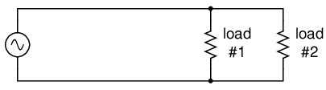
El diagrama esquemático del sistema de energía monofásico muestra poco sobre el cableado de un circuito de energía práctico.
Representado arriba (Figura above) es un circuito de CA muy simple. Si la disipación de potencia de la resistencia de carga fuera sustancial, podríamos llamarlo "circuito de potencia" o "sistema de potencia" en lugar de considerarlo simplemente como un circuito normal. La distinción entre un “circuito de potencia” y un “circuito regular” puede parecer arbitraria, pero las preocupaciones prácticas definitivamente no lo son.
{kind=link}
Una de esas preocupaciones es el tamaño y el costo del cableado necesario para entregar energía desde la fuente de CA a la carga. Normalmente, no pensamos mucho en este tipo de preocupaciones si simplemente estamos analizando un circuito con el fin de aprender sobre las leyes de la electricidad. Sin embargo, en el mundo real puede ser una preocupación importante. Si le damos a la fuente en el circuito anterior un valor de voltaje y también le damos valores de disipación de potencia a las dos resistencias de carga, podemos determinar las necesidades de cableado para este circuito en particular: (Figura below)
{kind=link}
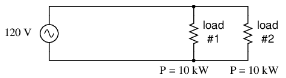
En la práctica, el cableado para las cargas de 20 kW a 120 Vac es bastante sustancial (167 A).
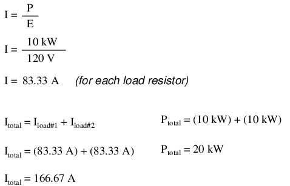
83.33 amps for each load resistor in Figure abovesuma 166,66 amperios de corriente total del circuito. Esta no es una cantidad pequeña de corriente y requeriría conductores de alambre de cobre de al menos calibre 1/0. Dicho cable tiene más de 6 mm (1/4 de pulgada) de diámetro y pesa más de 300 libras por cada mil pies. ¡Ten en cuenta que el cobre tampoco es barato! Sería mejor para nosotros encontrar formas de minimizar dichos costos si estuviéramos diseñando un sistema de energía con conductores de gran longitud.
Una forma de hacerlo sería aumentar el voltaje de la fuente de energía y utilizar cargas construidas para disipar 10 kW cada una a este voltaje más alto. Las cargas, por supuesto, tendrían que tener valores de resistencia mayores para disipar la misma potencia que antes (10 kW cada una) a un voltaje mayor que antes. La ventaja sería que se requeriría menos corriente, lo que permitiría el uso de cables más pequeños, livianos y baratos: (Figura below)
{kind=link}
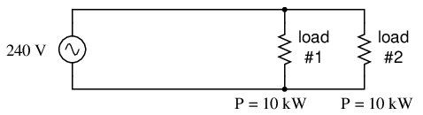
Las mismas cargas de 10 kW a 240 Vca requieren un cableado menos sustancial que a 120 Vca (83 A).
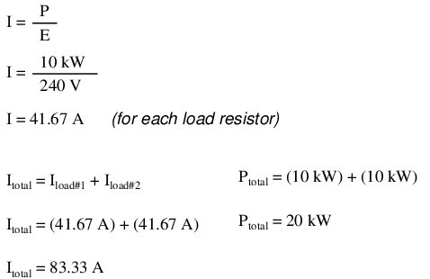
Ahora nuestrototalLa corriente del circuito es de 83,33 amperios, la mitad de lo que era antes. Ahora podemos usar alambre de calibre número 4, que pesa menos de la mitad de lo que pesa un alambre de calibre 1/0 por unidad de longitud. Se trata de una reducción considerable del coste del sistema sin degradación del rendimiento. Esta es la razón por la que los diseñadores de sistemas de distribución de energía optan por transmitir energía eléctrica utilizando voltajes muy altos (muchos miles de voltios): para capitalizar los ahorros obtenidos mediante el uso de cables más pequeños, livianos y baratos.
Sin embargo, esta solución no está exenta de desventajas. Otra preocupación práctica con los circuitos eléctricos es el peligro de descarga eléctrica debido a altos voltajes. Una vez más, este no es normalmente el tipo de cosas en las que nos concentramos mientras aprendemos sobre las leyes de la electricidad, pero es una preocupación muy válida en el mundo real, especialmente cuando se trata de grandes cantidades de energía. La ganancia de eficiencia obtenida al aumentar el voltaje del circuito nos presenta un mayor peligro de descarga eléctrica. Las empresas de distribución de energía abordan este problema tendiendo sus líneas eléctricas a lo largo de postes o torres altas y aislando las líneas de las estructuras de soporte con grandes aisladores de porcelana.
En el punto de uso (el cliente de energía eléctrica), todavía existe la cuestión de qué voltaje usar para alimentar las cargas. El alto voltaje proporciona una mayor eficiencia del sistema mediante la reducción de la corriente del conductor, pero puede que no siempre sea práctico mantener el cableado eléctrico fuera del alcance en el punto de uso, de la misma manera que se puede elevar fuera del alcance en los sistemas de distribución. Este equilibrio entre eficiencia y peligro es algo que los diseñadores de sistemas eléctricos europeos han decidido arriesgar, ya que todos sus hogares y electrodomésticos funcionan a un voltaje nominal de 240 voltios en lugar de 120 voltios como ocurre en América del Norte. Es por eso que los turistas estadounidenses que visitan Europa deben llevar pequeños transformadores reductores para sus aparatos portátiles, para reducir la energía de 240 VCA (voltios CA) a una más adecuada de 120 VCA.
¿Existe alguna forma de aprovechar las ventajas de una mayor eficiencia y una reducción de los riesgos para la seguridad al mismo tiempo? Una solución sería instalar transformadores reductores en el punto final del uso de energía, tal como debe hacer el turista estadounidense mientras está en Europa. Sin embargo, esto sería costoso e inconveniente para cualquier cosa que no sean cargas muy pequeñas (donde los transformadores se pueden construir a bajo costo) o cargas muy grandes (donde el gasto de cables de cobre gruesos excedería el gasto de un transformador).
Una solución alternativa sería utilizar un suministro de voltaje más alto para proporcionar energía a dos cargas de voltaje más bajo en serie. Este enfoque combina la eficiencia de un sistema de alto voltaje con la seguridad de un sistema de bajo voltaje: (Figura below)
{kind=link}
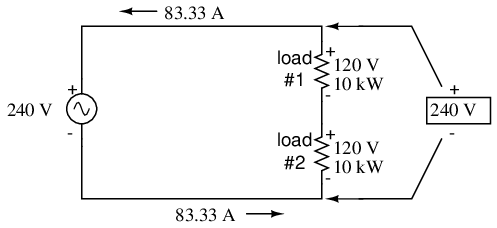
Cargas de 120 Vac conectadas en serie, accionadas por una fuente de 240 Vac a una corriente total de 83,3 A.
Observe las marcas de polaridad (+ y -) para cada voltaje que se muestra, así como las flechas unidireccionales para la corriente. En su mayor parte, he evitado etiquetar "polaridades" en los circuitos de CA que hemos estado analizando, aunque la notación es válida para proporcionar un marco de referencia para la fase. En secciones posteriores de este capítulo, las relaciones de fase se volverán muy importantes, por lo que introduciré esta notación al principio del capítulo para que usted se familiarice.
La corriente a través de cada carga es la misma que en el circuito simple de 120 voltios, pero las corrientes no son aditivas porque las cargas están en serie en lugar de en paralelo. El voltaje en cada carga es sólo de 120 voltios, no de 240, por lo que el factor de seguridad es mejor. Eso sí, todavía tenemos 240 voltios completos en los cables del sistema de energía, perocada cargaestá funcionando a un voltaje reducido. Si alguien va a recibir una descarga eléctrica, lo más probable es que sea por entrar en contacto con los conductores de una carga particular y no por el contacto a través de los cables principales de un sistema de energía.
Sólo hay una desventaja en este diseño: las consecuencias de que una carga no se abra o se apague (suponiendo que cada carga tenga un interruptor de encendido/apagado en serie para interrumpir la corriente) no son buenas. Al ser un circuito en serie, si cualquiera de las cargas se abriera, la corriente también se detendría en la otra carga. Por esta razón, necesitamos modificar un poco el diseño: (Figura below)
{kind=link}
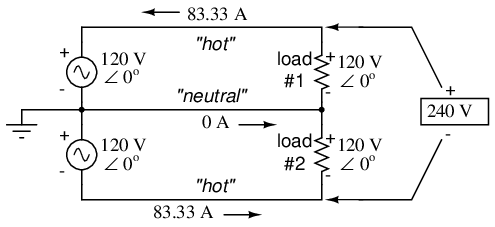
La adición de un conductor neutro permite controlar las cargas individualmente.
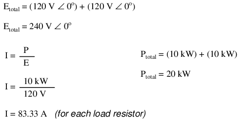
En lugar de una única fuente de alimentación de 240 voltios, utilizamos dos fuentes de 120 voltios (¡en fase entre sí!) en serie para producir 240 voltios, luego pasamos un tercer cable hasta el punto de conexión entre las cargas para manejar la eventualidad de una apertura de carga. Esto se llama unfase divididasistema de energía. Tres cables más pequeños siguen siendo más baratos que los dos cables necesarios con el diseño paralelo simple, por lo que todavía estamos a la vanguardia en eficiencia. El observador astuto notará que el cable neutro sólo tiene que llevar eldiferenciade corriente entre las dos cargas de regreso a la fuente. En el caso anterior, con cargas perfectamente “equilibradas” que consumen cantidades iguales de energía, el cable neutro transporta corriente cero.
Observe cómo el cable neutro está conectado a tierra en el extremo de la fuente de alimentación. Esta es una característica común en los sistemas de energía que contienen cables "neutrales", ya que la conexión a tierra del cable neutro garantiza el menor voltaje posible en un momento dado entre cualquier cable "vivo" y tierra.
Un componente esencial de un sistema de energía de fase dividida es la fuente de voltaje de CA dual. Afortunadamente, diseñar y construir uno no es difícil. Dado que la mayoría de los sistemas de CA reciben su energía de un transformador reductor de todos modos (reduciendo el voltaje desde altos niveles de distribución a un voltaje de nivel de usuario como 120 o 240), ese transformador se puede construir con un devanado secundario con derivación central: (Figura below)
{kind=link}
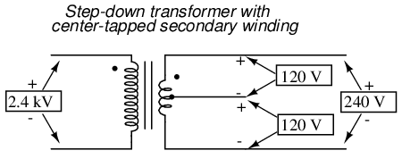
La energía estadounidense de 120/240 VCA se deriva de un transformador de servicio público con toma central.
Si la alimentación de CA proviene directamente de un generador (alternador), las bobinas pueden tener una derivación central similar para lograr el mismo efecto. El gasto adicional de incluir una conexión de derivación central en el devanado de un transformador o alternador es mínimo.
Aquí es donde las marcas de polaridad (+) y (-) se vuelven realmente importantes. Esta notación se utiliza a menudo para hacer referencia a las fases demúltipleFuentes de voltaje de CA, por lo que queda claro si se ayudan (“impulsan”) entre sí o se oponen (“contrarrestan”) entre sí. Si no fuera por estas marcas de polaridad, las relaciones de fase entre múltiples fuentes de CA podrían resultar muy confusas. Tenga en cuenta que las fuentes de fase dividida en el esquema (cada una de 120 voltios ∠ 0o), con marcas de polaridad (+) a (-), al igual que las baterías auxiliares en serie, se pueden representar alternativamente como tal: (Figura below)
{kind=link}
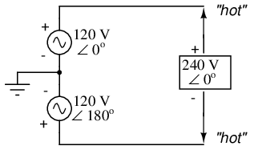
La fuente de 120/240 Vac de fase dividida equivale a dos series que alimentan fuentes de 120 Vac.
Para calcular matemáticamente el voltaje entre cables "calientes", debemossustraervoltajes, porque sus marcas de polaridad muestran que están opuestos entre sí:
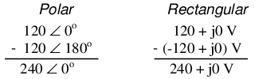
Si marcamos el punto de conexión común de las dos fuentes (el cable neutro) con la misma marca de polaridad (-), debemos expresar sus cambios de fase relativos como 180oaparte. De lo contrario, estaríamos denotando dos fuentes de voltaje en directa oposición entre sí, lo que daría 0 voltios entre los dos conductores “calientes”. ¿Por qué me tomo el tiempo para explicar las marcas de polaridad y los ángulos de fase? ¡Tendrá más sentido en la siguiente sección!
Los sistemas de energía en los hogares y la industria ligera estadounidenses suelen ser del tipo de fase dividida y proporcionan la denominada energía de 120/240 VCA. El término "fase dividida" simplemente se refiere al suministro de voltaje dividido en dicho sistema. En un sentido más general, este tipo de fuente de alimentación de CA se denominamonofásicoporque ambas formas de onda de voltaje están en fase o en paso entre sí.
El término "monofásico" es un contrapunto a otro tipo de sistema de energía llamado "polifásico" que estamos a punto de investigar en detalle. Disculpas por la larga introducción que conduce al título-tema de este capítulo. Las ventajas de los sistemas de energía polifásicos son más obvias si primero se tiene un buen conocimiento de los sistemas monofásicos.
- REVISAR:
- monofásicoLos sistemas de energía se definen por tener una fuente de CA con una sola forma de onda de voltaje.
- A fase divididaUn sistema de energía es aquel con múltiples fuentes de voltaje CA (en fase) conectadas en serie, que entregan energía a cargas a más de un voltaje, con más de dos cables. Se utilizan principalmente para lograr el equilibrio entre la eficiencia del sistema (corrientes de conductor bajas) y la seguridad (voltajes de carga bajos).
- Las fuentes de CA de fase dividida se pueden crear fácilmente tocando en el centro los devanados de las bobinas de transformadores o alternadores.
Three-phase power systems
Los sistemas de energía de fase dividida logran su alta eficiencia de conductorandBajo riesgo de seguridad al dividir el voltaje total en partes menores y alimentar múltiples cargas en esos voltajes menores, mientras consume corrientes a niveles típicos de un sistema de voltaje completo. Esta técnica, por cierto, funciona tan bien para sistemas de alimentación de CC como para sistemas de CA monofásicos. A este tipo de sistemas se les suele denominartres hilossistemas en lugar defase divididaporque “fase” es un concepto restringido a AC.
Pero sabemos por nuestra experiencia con vectores y números complejos que los voltajes de CA no siempre suman como pensamos si están desfasados entre sí. Este principio, aplicado a los sistemas de energía, se puede utilizar para crear sistemas de energía con eficiencias de conductor aún mayores y menor riesgo de descarga eléctrica que con fase dividida.
Supongamos que tenemos dos fuentes de voltaje CA conectadas en serie, como en el sistema de fase dividida que vimos antes, excepto que cada fuente de voltaje tenía 120odesfasado con el otro: (Figura below)
{kind=link}
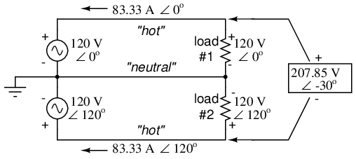
Par de fuentes de 120 Vac fase 120o, similar a la fase dividida.
Dado que cada fuente de voltaje es de 120 voltios y cada resistencia de carga está conectada directamente en paralelo con su fuente respectiva, el voltaje en cada cargadebeTambién será de 120 voltios. Dadas las corrientes de carga de 83,33 amperios, cada carga aún debe estar disipando 10 kilovatios de potencia. Sin embargo, el voltaje entre los dos cables "calientes" no es de 240 voltios (120 ∠ 0o- 120 ∠ 180o) porque la diferencia de fase entre las dos fuentes no es 180o. En cambio, el voltaje es:
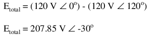
Nominalmente, decimos que el voltaje entre conductores "calientes" es de 208 voltios (redondeando hacia arriba) y, por lo tanto, el voltaje del sistema de energía se designa como 120/208.
Si calculamos la corriente a través del conductor “neutro”, encontramos que esnotcero, incluso con resistencias de carga equilibradas. La ley de corrientes de Kirchhoff nos dice que las corrientes que entran y salen del nodo entre las dos cargas deben ser cero: (Figura below)
{kind=link}
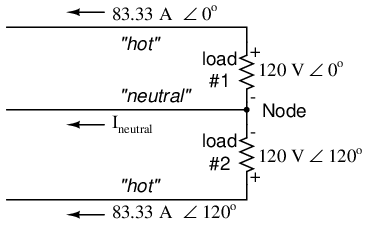
El cable neutro transporta corriente en el caso de un par de 120ofuentes escalonadas.
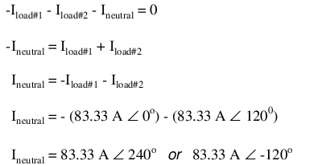
Entonces, encontramos que el cable "neutro" transporta 83,33 amperios completos, al igual que cada cable "caliente".
Tenga en cuenta que todavía estamos transmitiendo 20 kW de potencia total a las dos cargas, y el cable "caliente" de cada carga transporta 83,33 amperios como antes. Con la misma cantidad de corriente a través de cada cable "caliente", debemos usar conductores de cobre del mismo calibre, por lo que no hemos reducido el costo del sistema en comparación con el sistema de fase dividida 120/240. Sin embargo, hemos obtenido una ganancia en seguridad, porque el voltaje total entre los dos conductores “calientes” es 32 voltios menor que en el sistema de fase dividida (208 voltios en lugar de 240 voltios).
El hecho de que el cable neutro transporte 83,33 amperios de corriente plantea una posibilidad interesante: dado que de todos modos transporta corriente, ¿por qué no utilizar ese tercer cable como otro conductor "caliente", alimentando otra resistencia de carga con una tercera fuente de 120 voltios que tenga un ángulo de fase de 240?o? De esa manera podríamos transmitirmáspotencia (otros 10 kW) sin necesidad de añadir más conductores. Veamos cómo podría verse esto: (Figura below)
{kind=link}
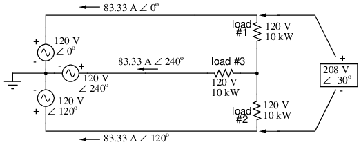
Con una tercera carga escalonada 120opara los otros dos, las corrientes son las mismas que para dos cargas.
Un análisis matemático completo de todos los voltajes y corrientes en este circuito requeriría el uso de un teorema de red, siendo el más sencillo el teorema de superposición. Le ahorraré los cálculos largos y prolongados porque debería poder comprender intuitivamente que las tres fuentes de voltaje en tres ángulos de fase diferentes entregarán 120 voltios cada una a una tríada equilibrada de resistencias de carga. Como prueba de esto, podemos usar SPICE para hacer los cálculos por nosotros: (Figura below, Listado SPICE: sistema de energía polifásico 120/208)
{kind=link}
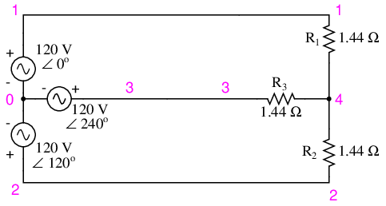
Circuito SPICE: tres cargas de 3 Φ en fase a 120o.
120/208 polyphase power system v1 1 0 ac 120 0 sin v2 2 0 ac 120 120 sin v3 3 0 ac 120 240 sin r1 1 4 1.44 r2 2 4 1.44 r3 3 4 1.44 .ac lin 1 60 60 .print ac v(1,4) v(2,4) v(3,4) .print ac v(1,2) v(2,3) v(3,1) .print ac i(v1) i(v2) i(v3) .end
VOLTAGE ACROSS EACH LOAD freq v(1,4) v(2,4) v(3,4) 6.000E+01 1.200E+02 1.200E+02 1.200E+02 VOLTAGE BETWEEN “HOT” CONDUCTORS freq v(1,2) v(2,3) v(3,1) 6.000E+01 2.078E+02 2.078E+02 2.078E+02 CURRENT THROUGH EACH VOLTAGE SOURCE freq i(v1) i(v2) i(v3) 6.000E+01 8.333E+01 8.333E+01 8.333E+01
Efectivamente, obtenemos 120 voltios a través de cada resistencia de carga, con (aproximadamente) 208 voltios entre dos conductores "calientes" cualesquiera y corrientes de conductor iguales a 83,33 amperios. (Cifra below) A esa corriente y voltaje, cada carga disipará 10 kW de potencia. Tenga en cuenta que este circuito no tiene un conductor "neutro" para garantizar un voltaje estable para todas las cargas si una se abre. Lo que tenemos aquí es una situación similar a nuestro circuito de alimentación de fase dividida sin conductor “neutro”: si una carga falla, las caídas de voltaje en las cargas restantes cambiarán. Para garantizar la estabilidad del voltaje de carga en caso de otra apertura de carga, necesitamos un cable neutro para conectar el nodo fuente y el nodo de carga juntos:
{kind=link}
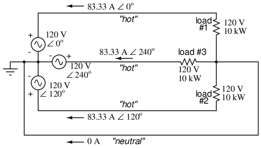
Circuito SPICE anotado con resultados de simulación: tres cargas de 3 Φ en fase a 120o.
Mientras las cargas permanezcan equilibradas (igual resistencia, iguales corrientes), el cable neutro no tendrá que transportar ninguna corriente. Está ahí en caso de que una o más resistencias de carga fallen al abrirse (o se apaguen mediante un interruptor de desconexión).
Este circuito que hemos estado analizando con tres fuentes de voltaje se llamapolifásicocircuito. El prefijo "poli" simplemente significa "más de uno", como en "escuela politécnicateísmo” (creencia en más de una deidad), “escuela politécnicagon” (una forma geométrica hecha de múltiples segmentos de línea: por ejemplo,pentágono and hexágono), y "escuela politécnicaatómico" (una sustancia compuesta de múltiples tipos de átomos). Dado que todas las fuentes de voltaje están en diferentes ángulos de fase (en este caso, tres ángulos de fase diferentes), este es un "escuela politécnicacircuito de fase". Más específicamente, es uncircuito trifásico, del tipo que se utiliza predominantemente en grandes sistemas de distribución de energía.
Analicemos las ventajas de un sistema de energía trifásico sobre un sistema monofásico de voltaje de carga y capacidad de potencia equivalentes. Un sistema monofásico con tres cargas conectadas directamente en paralelo tendría una corriente total muy alta (83,33 veces 3, o 250 amperios). (Figura below)
{kind=link}
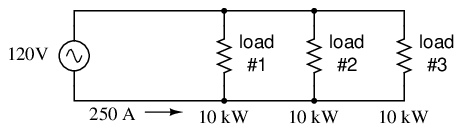
A modo de comparación, tres cargas de 10 Kw en un sistema de 120 Vca consumen 250 A.
Esto necesitaría alambre de cobre de calibre 3/0 (muy¡grande!), a alrededor de 510 libras por cada mil pies, y con un precio considerable. Si la distancia desde la fuente hasta la carga fuera de 1000 pies, necesitaríamos más de media tonelada de alambre de cobre para hacer el trabajo. Por otro lado, podríamos construir un sistema de fase dividida con dos cargas de 15 kW y 120 voltios. (Cifra below)
{kind=link}
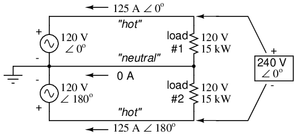
El sistema de fase dividida consume la mitad de la corriente de 125 A a 240 Vca en comparación con el sistema de 120 Vca.
Nuestra corriente es la mitad de lo que era con el circuito paralelo simple, lo cual es una gran mejora. Podríamos salirnos con la nuestra usando alambre de cobre de calibre número 2 con una masa total de aproximadamente 600 libras, calculando aproximadamente 200 libras por cada mil pies con tres tramos de 1000 pies cada uno entre la fuente y las cargas. Sin embargo, también debemos considerar el mayor riesgo para la seguridad que supone tener 240 voltios presentes en el sistema, aunque cada carga sólo reciba 120 voltios. En general, existe una mayor posibilidad de que se produzcan descargas eléctricas peligrosas.
Cuando contrastamos estos dos ejemplos con nuestro sistema trifásico (Figura above), las ventajas son bastante claras. En primer lugar, las corrientes de los conductores son bastante menores (83,33 amperios frente a 125 o 250 amperios), lo que permite el uso de cables mucho más delgados y livianos. Podemos usar alambre de calibre número 4 a aproximadamente 125 libras por mil pies, lo que dará un total de 500 libras (cuatro tramos de 1000 pies cada uno) para nuestro circuito de ejemplo. Esto representa un importante ahorro de costos respecto al sistema de fase dividida, con el beneficio adicional de que el voltaje máximo en el sistema es menor (208 versus 240).
Queda una pregunta por responder: ¿cómo podemos conseguir tres fuentes de voltaje CA cuyos ángulos de fase sean exactamente 120?o¿aparte? Obviamente no podemos centrar el devanado de un transformador o alternador como lo hicimos en el sistema de fase dividida, ya que eso sólo puede darnos formas de onda de voltaje que estén en fase o en 180°.odesfasado. Quizás podríamos encontrar alguna forma de utilizar condensadores e inductores para crear cambios de fase de 120o, pero entonces esos cambios de fase también dependerían de los ángulos de fase de nuestras impedancias de carga (¡sustituir una carga capacitiva o inductiva por una carga resistiva cambiaría todo!).
La mejor manera de obtener los cambios de fase que buscamos es generarlos en la fuente: construir el generador de CA (alternador) que proporciona la energía de tal manera que el campo magnético giratorio pase por tres conjuntos de devanados de alambre, cada conjunto espaciado 120oseparados alrededor de la circunferencia de la máquina como en la Figura below.
{kind=link}
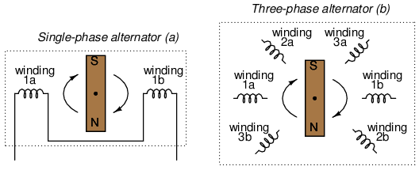
(a) Alternador monofásico, (b) Alternador trifásico.
Juntos, los seis devanados “polares” de un alternador trifásico están conectados para formar tres pares de devanados, cada par produce voltaje de CA con un ángulo de fase de 120.odesplazado de cualquiera de los otros dos pares de bobinados. Las interconexiones entre pares de devanados (como se muestra para el alternador monofásico: el cable puente entre los devanados 1a y 1b) se han omitido en el dibujo del alternador trifásico por simplicidad.
En nuestro circuito de ejemplo, mostramos las tres fuentes de voltaje conectadas entre sí en una configuración "Y" (a veces llamada configuración "estrella"), con un cable de cada fuente conectado a un punto común (el nodo donde conectamos el conductor "neutro"). La forma común de representar este esquema de conexión es dibujar los devanados en forma de "Y", como en la figura. below.
{kind=link}
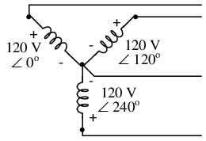
Configuración del alternador en "Y".
La configuración “Y” no es la única opción que tenemos a nuestra disposición, pero probablemente sea la más fácil de entender en un principio. Habrá más sobre este tema más adelante en este capítulo.
- REVISAR:
- A monofásicoUn sistema de energía es aquel en el que solo hay una fuente de voltaje de CA (una forma de onda de voltaje de fuente).
- A fase divididaUn sistema de energía es aquel en el que hay dos fuentes de voltaje, 180odesfasados entre sí, alimentando dos cargas conectadas en serie. La ventaja de esto es la capacidad de tener corrientes de conductor más bajas y al mismo tiempo mantener voltajes de carga bajos por razones de seguridad.
- A polifásicoEl sistema de energía utiliza múltiples fuentes de voltaje en diferentes ángulos de fase entre sí (muchas “fases” de formas de onda de voltaje en funcionamiento). Un sistema de energía polifásico puede entregar más energía a menos voltaje con conductores de menor calibre que los sistemas monofásicos o divididos.
- Las fuentes de voltaje desfasadas necesarias para un sistema de energía polifásico se crean en alternadores con múltiples juegos de devanados de cables. Estos conjuntos de devanado están espaciados alrededor de la circunferencia de rotación del rotor en los ángulos deseados.
Phase rotation
Tomemos el diseño del alternador trifásico presentado anteriormente (Figura below) y observa lo que sucede mientras el imán gira.
{kind=link}
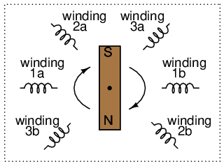
Alternador trifásico
El cambio de ángulo de fase de 120oes una función del cambio del ángulo de rotación real de los tres pares de devanados (Figura below). Si el imán gira en el sentido de las agujas del reloj, el devanado 3 generará su voltaje instantáneo máximo exactamente 120o(de rotación del eje del alternador) después del devanado 2, que alcanzará su punto máximo 120odespués del bobinado 1. El imán pasa por cada par de polos en diferentes posiciones en el movimiento de rotación del eje. El lugar donde decidamos colocar los devanados dictará la cantidad de cambio de fase entre las formas de onda de voltaje CA de los devanados. Si hacemos del devanado 1 nuestra fuente de voltaje de “referencia” para el ángulo de fase (0o), entonces el devanado 2 tendrá un ángulo de fase de -120o(120oretrasado, o 240oadelante) y enrollando 3 en un ángulo de -240o(o 120oprincipal).
{kind=link}
Esta secuencia de cambios de fase tiene un orden definido. Para la rotación del eje en el sentido de las agujas del reloj, el orden es 1-2-3 (el devanado 1 alcanza su punto máximo primero, el devanado 2 y luego el devanado 3). Este orden se sigue repitiendo mientras sigamos girando el eje del alternador. (Cifra below)
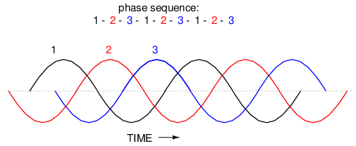
Secuencia de fases de rotación en el sentido de las agujas del reloj: 1-2-3.
Sin embargo, si nosotroscontrarrestarAl girar el eje del alternador (gírelo en el sentido contrario a las agujas del reloj), el imán pasará por los pares de polos en la secuencia opuesta. En lugar del 1-2-3 tendremos el 3-2-1. Ahora, la forma de onda del devanado 2 seráprincipal 120odelante de 1 en lugar de retrasarse, y 3 serán otros 120odelante de 2. (Figura below)
{kind=link}
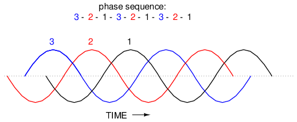
Secuencia de fases de rotación en sentido antihorario: 3-2-1.
El orden de las secuencias de formas de onda de voltaje en un sistema polifásico se llamarotación de fase or secuencia de fases. Si utilizamos una fuente de voltaje polifásico para alimentar cargas resistivas, la rotación de fases no hará ninguna diferencia. Ya sea 1-2-3 o 3-2-1, las magnitudes de voltaje y corriente serán todas iguales. Hay algunas aplicaciones de energía trifásica, como veremos en breve, que dependen de que la rotación de fases sea en un sentido u otro. Dado que los voltímetros y amperímetros serían inútiles para decirnos cuál es la rotación de fases de un sistema de energía en funcionamiento, necesitamos algún otro tipo de instrumento capaz de hacer el trabajo.
Un ingenioso diseño de circuito utiliza un condensador para introducir un cambio de fase entre el voltaje y la corriente, que luego se usa para detectar la secuencia mediante la comparación entre el brillo de dos lámparas indicadoras en la Figura below.
{kind=link}
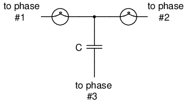
El detector de secuencia de fases compara el brillo de dos lámparas.
Las dos lámparas tienen la misma resistencia de filamento y potencia en vatios. El condensador está dimensionado para tener aproximadamente la misma cantidad de reactancia a la frecuencia del sistema que la resistencia de cada lámpara. Si el condensador fuera reemplazado por una resistencia de igual valor que la resistencia de las lámparas, las dos lámparas brillarían con el mismo brillo y el circuito estaría equilibrado. Sin embargo, el condensador introduce un cambio de fase entre el voltaje y la corriente en el tercer tramo del circuito igual a 90o. Este cambio de fase, mayor que 0opero menos de 120o, distorsiona los valores de voltaje y corriente a través de las dos lámparas de acuerdo con sus cambios de fase en relación con la fase 3. El siguiente análisis de SPICE demuestra lo que sucederá: (Figura below), "detector de rotación de fase - secuencia = v1-v2-v3"
{kind=link}
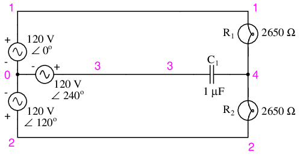
Circuito SPICE para detector de secuencia de fases.
phase rotation detector -- sequence = v1-v2-v3 v1 1 0 ac 120 0 sin v2 2 0 ac 120 120 sin v3 3 0 ac 120 240 sin r1 1 4 2650 r2 2 4 2650 c1 3 4 1u .ac lin 1 60 60 .print ac v(1,4) v(2,4) v(3,4) .end freq v(1,4) v(2,4) v(3,4) 6.000E+01 4.810E+01 1.795E+02 1.610E+02
El cambio de fase resultante del condensador hace que el voltaje a través de la lámpara de la fase 1 (entre los nodos 1 y 4) caiga a 48,1 voltios y el voltaje a través de la lámpara de la fase 2 (entre los nodos 2 y 4) aumente a 179,5 voltios, lo que hace que la primera lámpara se atenúe y la segunda se ilumine. Sucederá todo lo contrario si se invierte la secuencia de fases: "detector de rotación de fase - secuencia = v3-v2-v1 "
phase rotation detector -- sequence = v3-v2-v1 v1 1 0 ac 120 240 sin v2 2 0 ac 120 120 sin v3 3 0 ac 120 0 sin r1 1 4 2650 r2 2 4 2650 c1 3 4 1u .ac lin 1 60 60 .print ac v(1,4) v(2,4) v(3,4) .end freq v(1,4) v(2,4) v(3,4) 6.000E+01 1.795E+02 4.810E+01 1.610E+02
Aquí, ("detector de rotación de fase - secuencia = v3-v2-v1") la primera lámpara recibe 179,5 voltios mientras que la segunda recibe solo 48,1 voltios.
Hemos investigado cómo se produce la rotación de fases (el orden en el que los pares de polos pasan por el imán giratorio del alternador) y cómo se puede cambiar invirtiendo la rotación del eje del alternador. Sin embargo, invertir la rotación del eje del alternador no suele ser una opción disponible para un usuario final de energía eléctrica suministrada por una red nacional (el "alternador" es en realidad el total combinado de todos los alternadores de todas las plantas de energía que alimentan la red). hay unmuchoUna forma más fácil de invertir la secuencia de fases que invertir la rotación del alternador: simplemente intercambie dos de los tres cables "calientes" que van a una carga trifásica.
Este truco tiene más sentido si echamos otro vistazo a una secuencia de fases en funcionamiento de una fuente de voltaje trifásica:
1-2-3 rotation: 1-2-3-1-2-3-1-2-3-1-2-3-1-2-3 . . . 3-2-1 rotation: 3-2-1-3-2-1-3-2-1-3-2-1-3-2-1 . . .
Lo que comúnmente se designa como rotación de fase “1-2-3” también podría llamarse “2-3-1” o “3-1-2”, yendo de izquierda a derecha en la cadena numérica de arriba. Asimismo, la rotación opuesta (3-2-1) podría denominarse fácilmente “2-1-3” o “1-3-2”.
Comenzando con una rotación de fase de 3-2-1, podemos probar todas las posibilidades para intercambiar dos cables cualesquiera a la vez y ver qué sucede con la secuencia resultante en la Figura below.
{kind=link}
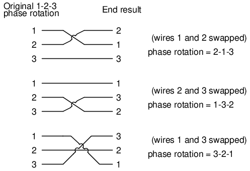
Todas las posibilidades de intercambiar dos cables cualesquiera.
No importa qué par de cables “calientes” de los tres elijamos intercambiar, la rotación de fase termina invirtiéndose (1-2-3 se cambia a 2-1-3, 1-3-2 o 3-2-1, todos equivalentes).
- REVISAR:
- Rotación de fase, osecuencia de fases, es el orden en el que las formas de onda de voltaje de una fuente de CA polifásica alcanzan sus respectivos picos. Para un sistema trifásico, sólo existen dos secuencias de fases posibles: 1-2-3 y 3-2-1, correspondientes a los dos posibles sentidos de rotación del alternador.
- La rotación de fases no tiene impacto en las cargas resistivas, pero sí tendrá impacto en las cargas reactivas desequilibradas, como se muestra en el funcionamiento de un circuito detector de rotación de fases.
- La rotación de fases se puede revertir intercambiando dos de los tres cables "calientes" que suministran energía trifásica a una carga trifásica.
Polyphase motor design
Quizás el beneficio más importante de la alimentación de CA polifásica sobre la monofásica es el diseño y funcionamiento de los motores de CA. Como estudiamos en el primer capítulo de este libro, algunos tipos de motores de CA son prácticamente idénticos en construcción a sus contrapartes de alternador (generador), y consisten en devanados de alambre estacionarios y un conjunto de imán giratorio. (Otros diseños de motores de CA no son tan simples, pero dejaremos esos detalles para otra lección).
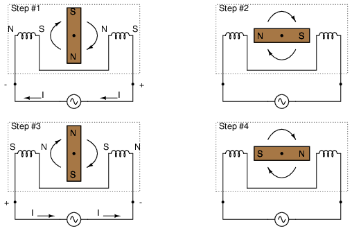
Funcionamiento del motor de CA en el sentido de las agujas del reloj.
Si el imán giratorio puede mantener la frecuencia de la corriente alterna que energiza los devanados (bobinas) del electroimán, continuará moviéndose en el sentido de las agujas del reloj. (Cifra above) Sin embargo, el sentido de las agujas del reloj no es la única dirección válida para que gire el eje de este motor.Podría fácilmente ser alimentado en sentido antihorario por la misma forma de onda de voltaje de CA a en la Figura below.
{kind=link}
{kind=link}
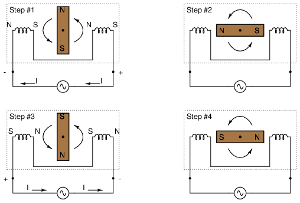
Funcionamiento del motor de CA en sentido antihorario.
Observe que con exactamente la misma secuencia de ciclos de polaridad (voltaje, corriente y polos magnéticos producidos por las bobinas), el rotor magnético puede girar en cualquier dirección. Este es un rasgo común de todos los motores de “inducción” y “síncronos” de CA monofásicos: no tienen una dirección de rotación normal o “correcta”. En este punto debería surgir la pregunta natural: ¿cómo puede arrancar el motor en la dirección deseada si puede funcionar en cualquier sentido? La respuesta es que estos motores necesitan un poco de ayuda para arrancar. Una vez ayudó a girar en una dirección particular. Continuarán girando de esa manera mientras se mantenga alimentación de CA en los devanados.
El origen de esa “ayuda” para que un motor de CA monofásico se ponga en marcha en una dirección puede variar. Por lo general, proviene de un conjunto adicional de devanados colocados de manera diferente al conjunto principal y energizados con un voltaje de CA que está desfasado con la energía principal. (Cifra below)
{kind=link}
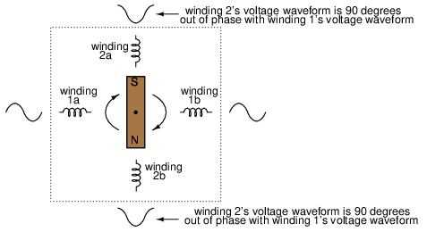
Motor bifásico AC de arranque unidireccional.
Estas bobinas suplementarias suelen estar conectadas en serie con un condensador para introducir un cambio de fase en la corriente entre los dos conjuntos de devanados. (Cifra below)
{kind=link}
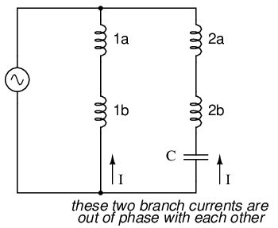
El cambio de fase del condensador agrega una segunda fase.
Ese cambio de fase crea campos magnéticos en las bobinas 2a y 2b que están igualmente desfasados con los campos de las bobinas 1a y 1b. El resultado es un conjunto de campos magnéticos con una rotación de fase definida. Es esta rotación de fase la que tira del imán giratorio en una dirección definida.
Los motores de CA polifásicos no requieren tales trucos para girar en una dirección definida. Dado que las formas de onda de la tensión de alimentación ya tienen una secuencia de rotación definida, también la tienen los respectivos campos magnéticos generados por los devanados estacionarios del motor. De hecho, la combinación de los conjuntos de devanados de tres fases trabajando juntos crea lo que a menudo se llamacampo magnético giratorio. Fue este concepto de campo magnético giratorio el que inspiró a Nikola Tesla a diseñar los primeros sistemas eléctricos polifásicos del mundo (simplemente para fabricar motores más simples y eficientes). Las ventajas de seguridad y corriente de línea de la energía polifásica sobre la energía monofásica se descubrieron más tarde.
Lo que puede ser un concepto confuso se aclara mucho más mediante la analogía. ¿Alguna vez has visto una hilera de bombillas parpadeantes como las que se utilizan en las decoraciones navideñas? Algunas cuerdas parecen “moverse” en una dirección definida mientras las bombillas brillan y se oscurecen alternativamente en secuencia. Otras cuerdas simplemente parpadean sin movimiento aparente. ¿Qué diferencia entre los dos tipos de cadenas de bombillas? Respuesta: ¡cambio de fase!
Examine una cadena de luces donde cada dos bombillas están encendidas en un momento dado como en (Figura below)
{kind=link}
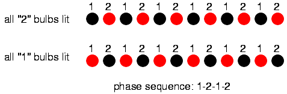
Secuencia de fases 1-2-1-2: las lámparas parecen moverse.
Cuando todas las bombillas “1” están encendidas, las bombillas “2” están apagadas y viceversa. Con esta secuencia de parpadeo, no hay un "movimiento" definido en la luz de las bombillas. Tus ojos podrían seguir un “movimiento” de izquierda a derecha con la misma facilidad que de derecha a izquierda. Técnicamente, las secuencias de parpadeo de las bombillas “1” y “2” son 180odesfasados (exactamente uno frente al otro). Esto es análogo al motor de CA monofásico, que puede funcionar con la misma facilidad en cualquier dirección, pero que no puede arrancar por sí solo porque la alternancia de su campo magnético carece de una “rotación” definida.
Ahora examinemos una cadena de luces donde hay tres conjuntos de bombillas para secuenciar en lugar de solo dos, y estos tres conjuntos están igualmente desfasados entre sí en la Figura below.
{kind=link}
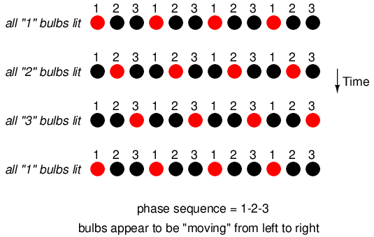
Secuencia de fases: 1-2-3: las bombillas parecen moverse de izquierda a derecha.
Si la secuencia de iluminación es 1-2-3 (la secuencia que se muestra en (Figura above)), las bombillas parecerán “moverse” de izquierda a derecha.Ahora imagine esta cadena parpadeante de bombillas dispuestas en círculo como en la Figura below.
{kind=link}
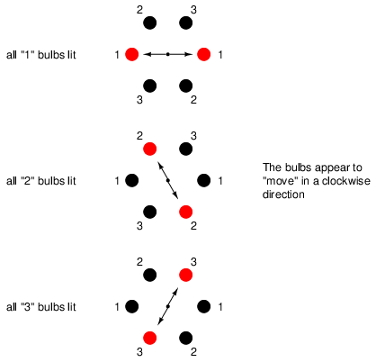
Disposición circular; Las bombillas parecen girar en el sentido de las agujas del reloj.
Ahora las luces en la figura. aboveParecen “moverse” en el sentido de las agujas del reloj porque están dispuestos alrededor de un círculo en lugar de una línea recta. No debería sorprender que la apariencia del movimiento se invierta si se invierte la secuencia de fases de las bombillas.
El patrón parpadeante parecerá moverse en el sentido de las agujas del reloj o en el sentido contrario según la secuencia de fases. Esto es análogo a un motor de CA trifásico con tres conjuntos de devanados energizados por fuentes de voltaje de tres cambios de fase diferentes en la Figura below.
{kind=link}
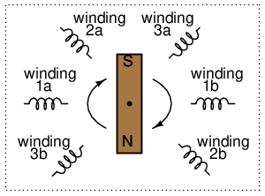
Motor de CA trifásico: una secuencia de fases de 1-2-3 hace girar el imán en el sentido de las agujas del reloj, 3-2-1 hace girar el imán en el sentido contrario a las agujas del reloj.
Con cambios de fase de menos de 180oobtenemos la verdadera rotación del campo magnético. En los motores monofásicos, el campo magnético giratorio necesario para el arranque automático debe crearse mediante un desfase capacitivo. En los motores polifásicos ya existen los desfases necesarios. Además, la dirección de rotación del eje para motores polifásicos se invierte muy fácilmente: simplemente intercambie dos cables "calientes" que van al motor, ¡y éste funcionará en la dirección opuesta!
- REVISAR:
- Los motores de “inducción” y “síncronos” de CA funcionan haciendo que un imán giratorio siga los campos magnéticos alternos producidos por los devanados de cables estacionarios.
- Los motores de CA monofásicos de este tipo necesitan ayuda para empezar a girar en una dirección determinada.
- Introduciendo un cambio de fase de menos de 180oDebido a los campos magnéticos de un motor de este tipo, se puede establecer una dirección definida de rotación del eje.
- Los motores de inducción monofásicos suelen utilizar un devanado auxiliar conectado en serie con un condensador para crear el cambio de fase necesario.
- Los motores polifásicos no necesitan tales medidas; su dirección de rotación está fijada por la secuencia de fases del voltaje que les alimenta.
- Intercambiar dos cables "calientes" en un motor de CA polifásico invertirá su secuencia de fases, invirtiendo así la rotación del eje.
Three-phase Y and Delta configurations
Inicialmente exploramos la idea de sistemas de energía trifásicos conectando tres fuentes de voltaje en lo que comúnmente se conoce como configuración "Y" (o "estrella"). Esta configuración de fuentes de tensión se caracteriza por un punto de conexión común que une un lado de cada fuente. (Cifra below)
{kind=link}
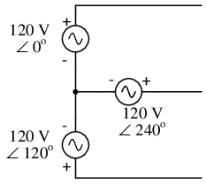
La conexión trifásica en “Y” tiene tres fuentes de voltaje conectadas a un punto común.
Si dibujamos un circuito que muestra que cada fuente de voltaje es una bobina de cable (devanado de alternador o transformador) y hacemos una ligera reorganización, la configuración en "Y" se vuelve más obvia en la Figura below.
{kind=link}
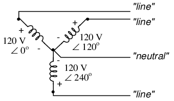
La conexión en “Y” trifásica de cuatro cables utiliza un cuarto cable "común".
Los tres conductores que se alejan de las fuentes de voltaje (devanados) hacia una carga generalmente se denominanpauta, mientras que los propios devanados normalmente se denominanfases. En un sistema conectado en Y, puede haber o no (Figura below) ser un cable neutro conectado en el punto de unión en el medio, aunque ciertamente ayuda a aliviar problemas potenciales en caso de que un elemento de una carga trifásica falle y se abra, como se analizó anteriormente.
{kind=link}
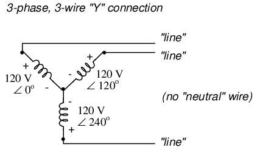
La conexión “Y” trifásica de tres hilos no utiliza el hilo neutro.
Cuando medimos tensión y corriente en sistemas trifásicos, debemos ser específicos en cuanto adóndeestamos midiendo.Tensión de línease refiere a la cantidad de voltaje medida entre dos conductores de línea cualesquiera en un sistema trifásico equilibrado. Con el circuito anterior, el voltaje de línea es de aproximadamente 208 voltios.Tensión de fasese refiere al voltaje medido en cualquier componente (devanado de fuente o impedancia de carga) en una fuente o carga trifásica balanceada. Para el circuito que se muestra arriba, el voltaje de fase es de 120 voltios. los términoscorriente de línea and corriente de fasesiguen la misma lógica: el primero se refiere a la corriente a través de cualquier conductor de línea y el segundo a la corriente a través de cualquier componente.
Las fuentes y cargas conectadas en Y siempre tienen voltajes de línea mayores que los voltajes de fase y corrientes de línea iguales a las corrientes de fase. Si la fuente o carga conectada en Y está equilibrada, el voltaje de línea será igual al voltaje de fase multiplicado por la raíz cuadrada de 3:
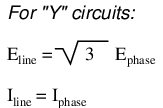
Sin embargo, la configuración en “Y” no es la única válida para conectar una fuente de tensión trifásica o elementos de carga entre sí. Otra configuración se conoce como “Delta”, por su parecido geométrico con la letra griega del mismo nombre (Δ). Observe de cerca la polaridad de cada devanado en la Figura below.
{kind=link}
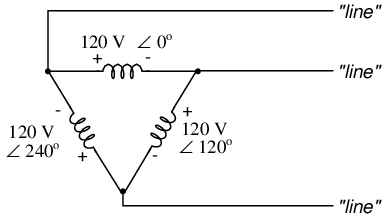
La conexión Δ trifásica de tres hilos no tiene común.
A primera vista, parece como si tres fuentes de voltaje como esta crearían un cortocircuito, los electrones fluyerían alrededor del triángulo sin nada más que la impedancia interna de los devanados para detenerlos. Sin embargo, debido a los ángulos de fase de estas tres fuentes de tensión, este no es el caso.
Una comprobación rápida de esto es utilizar la ley de voltaje de Kirchhoff para ver si los tres voltajes alrededor del bucle suman cero. Si lo hacen, entonces no habrá voltaje disponible para impulsar la corriente alrededor de ese bucle y, en consecuencia, no habrá corriente circulante. Comenzando con el devanado superior y avanzando en el sentido contrario a las agujas del reloj, nuestra expresión KVL se parece a esto:
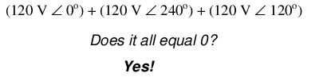
De hecho, si sumamos estas tres cantidades vectoriales, suman cero. Otra forma de verificar el hecho de que estas tres fuentes de voltaje se pueden conectar juntas en un bucle sin generar corrientes circulantes es abrir el bucle en un punto de unión y calcular el voltaje a través de la interrupción: (Figura below)
{kind=link}
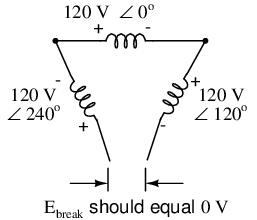
El voltaje en abierto Δ debe ser cero.
Empezando por el devanado derecho (120 V ∠ 120o) y avanzando en sentido antihorario, nuestra ecuación KVL se ve así:
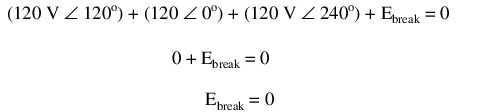
Efectivamente, habrá voltaje cero a través de la interrupción, lo que nos indica que no circulará corriente dentro del bucle triangular de devanados cuando se complete la conexión.
Habiendo establecido que una fuente de voltaje trifásico conectada en Δ no se quemará debido a las corrientes circulantes, pasamos a su uso práctico como fuente de energía en circuitos trifásicos. Debido a que cada par de conductores de línea está conectado directamente a través de un único devanado en un circuito Δ, el voltaje de línea será igual al voltaje de fase. Por el contrario, debido a que cada conductor de línea se conecta a un nodo entre dos devanados, la corriente de línea será la suma vectorial de las dos corrientes de fase que se unen. No es sorprendente que las ecuaciones resultantes para una configuración Δ sean las siguientes:
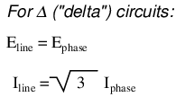
Veamos cómo funciona esto en un circuito de ejemplo: (Figura below)
{kind=link}
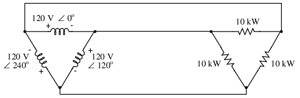
La carga en la fuente Δ está cableada en Δ.
Con cada resistencia de carga recibiendo 120 voltios de su respectivo devanado de fase en la fuente, la corriente en cada fase de este circuito será de 83,33 amperios:
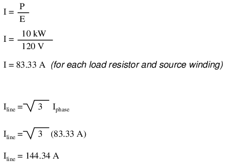
Entonces, cada corriente de línea en este sistema de energía trifásico es igual a 144,34 amperios, que es sustancialmente más que las corrientes de línea en el sistema conectado en Y que vimos anteriormente. Uno podría preguntarse si aquí hemos perdido todas las ventajas de la energía trifásica, dado el hecho de que tenemos corrientes conductoras mayores, lo que requiere cables más gruesos y costosos. La respuesta es no. Aunque este circuito requeriría tres conductores de cobre de calibre número 1 (a 1000 pies de distancia entre la fuente y la carga, esto equivale a un poco más de 750 libras de cobre para todo el sistema), aún es menos de las más de 1000 libras de cobre necesarias para un sistema monofásico que entrega la misma potencia (30 kW) al mismo voltaje (120 voltios de conductor a conductor).
Una ventaja distintiva de un sistema conectado en Δ es la falta de un cable neutro. Con un sistema conectado en Y, se necesitaba un cable neutro en caso de que una de las cargas de fase fallara al abrirse (o se apagara), para evitar que cambiaran los voltajes de fase en la carga. Esto no es necesario (¡ni siquiera posible!) en un circuito conectado en Δ. Con cada elemento de fase de carga conectado directamente a través de un devanado de fase fuente respectivo, el voltaje de fase será constante independientemente de las fallas abiertas en los elementos de carga.
Quizás la mayor ventaja de la fuente conectada en Δ es su tolerancia a fallos. Es posible que uno de los devanados en una fuente trifásica conectada en Δ falle al abrirse (Figura below) sin afectar el voltaje o la corriente de la carga.
{kind=link}
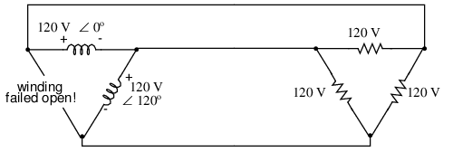
Incluso con una falla en el devanado fuente, el voltaje de línea sigue siendo de 120 V y el voltaje de la fase de carga sigue siendo de 120 V. La única diferencia es la corriente adicional en los devanados fuente funcionales restantes.
La única consecuencia de que un devanado fuente no se abra para una fuente conectada en Δ es un aumento de la corriente de fase en los devanados restantes. Compare esta tolerancia a fallas con un sistema conectado en Y que sufre un devanado de fuente abierta en la Figura below.
{kind=link}
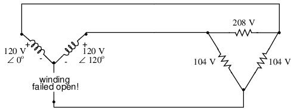
El devanado fuente abierto en “Y” reduce a la mitad el voltaje en dos cargas de una carga conectada en Δ.
Con una carga conectada en Δ, dos de las resistencias sufren un voltaje reducido mientras que una permanece en el voltaje de línea original, 208. Una carga conectada en Y sufre un destino aún peor (Figura below) con la misma falla en el devanado en una fuente conectada en Y
{kind=link}
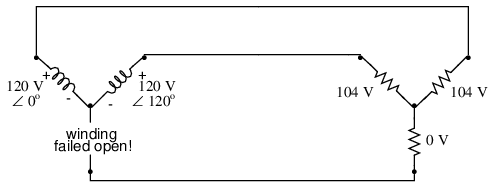
El devanado de código abierto de un sistema "Y-Y" reduce a la mitad el voltaje en dos cargas y pierde una carga por completo.
En este caso, dos resistencias de carga sufren una reducción de tensión mientras que la tercera pierde completamente la tensión de alimentación. Por esta razón, se prefieren las fuentes conectadas en Δ por su confiabilidad. Sin embargo, si se necesitan voltajes duales (por ejemplo, 120/208) o se prefieren para corrientes de línea más bajas, los sistemas conectados en Y son la configuración preferida.
- REVISAR:
- Los conductores conectados a los tres puntos de una fuente o carga trifásica se llamanpauta.
- Los tres componentes que componen una fuente o carga trifásica se denominanfases.
- Tensión de líneaes el voltaje medido entre dos líneas cualesquiera en un circuito trifásico.
- Tensión de fasees el voltaje medido a través de un solo componente en una fuente o carga trifásica.
- Línea actuales la corriente a través de cualquier línea entre una fuente trifásica y una carga.
- Corriente de fasees la corriente a través de cualquier componente que comprende una fuente o carga trifásica.
- En circuitos “Y” balanceados, el voltaje de línea es igual al voltaje de fase multiplicado por la raíz cuadrada de 3, mientras que la corriente de línea es igual a la corriente de fase.
-
- En circuitos Δ balanceados, el voltaje de línea es igual al voltaje de fase, mientras que la corriente de línea es igual a la corriente de fase multiplicada por la raíz cuadrada de 3.
-
- Las fuentes de tensión trifásicas conectadas en Δ ofrecen mayor fiabilidad en caso de fallo del devanado que las fuentes conectadas en Y. Sin embargo, las fuentes conectadas en Y pueden entregar la misma cantidad de energía con menos corriente de línea que las fuentes conectadas en Δ.
Three-phase transformer circuits
Dado que el sistema trifásico se utiliza con tanta frecuencia para los sistemas de distribución de energía, tiene sentido que necesitemos transformadores trifásicos para poder aumentar o reducir los voltajes. Esto es sólo parcialmente cierto, ya que los transformadores monofásicos normales se pueden agrupar para transformar la energía entre dos sistemas trifásicos en una variedad de configuraciones, eliminando la necesidad de un transformador trifásico especial. Sin embargo, se construyen transformadores trifásicos especiales para esas tareas y pueden funcionar con menos necesidad de material, menos tamaño y menos peso que sus contrapartes modulares.
Un transformador trifásico está formado por tres conjuntos de devanados primarios y secundarios, cada uno enrollado alrededor de una pata de un conjunto de núcleo de hierro. Básicamente, parece tres transformadores monofásicos que comparten un núcleo unido como en la Figura below.
{kind=link}
El núcleo del transformador trifásico tiene tres juegos de devanados.
Esos conjuntos de devanados primarios y secundarios se conectarán en configuraciones Δ o Y para formar una unidad completa. Las diversas combinaciones de formas en que estos devanados se pueden conectar entre sí serán el tema central de esta sección.
Ya sea que los juegos de devanados compartan un conjunto de núcleo común o cada par de devanados sea un transformador separado, las opciones de conexión de devanados son las mismas:
- Primaria - Secundaria
- Y - Y
- Y - Δ
- Δ - Y
- Δ - Δ
Las razones para elegir una configuración Y o Δ para las conexiones de devanados de transformadores son las mismas que para cualquier otra aplicación trifásica: las conexiones Y brindan la oportunidad de múltiples voltajes, mientras que las conexiones Δ disfrutan de un mayor nivel de confiabilidad (si un devanado falla al abrirse, los otros dos aún pueden mantener voltajes de línea completos para la carga).
Probablemente el aspecto más importante al conectar tres conjuntos de devanados primarios y secundarios para formar un banco de transformadores trifásico es prestar atención a la fase adecuada de los devanados (los puntos utilizados para indicar la "polaridad" de los devanados). Recuerde las relaciones de fase adecuadas entre los devanados de fase de Δ e Y: (Figura below)
{kind=link}
(Y) El punto central de la “Y” debe unir todos los puntos de bobinado “-” o “+”. (Δ) Las polaridades del devanado deben apilarse de forma complementaria (+ a -).
Obtener esta fase correcta cuando los devanados no se muestran en la configuración Y o Δ normal puede ser complicado. Permítanme ilustrar, comenzando con la Figura below.
{kind=link}
Entradas A1, B1, C1Se puede cablear “Δ” o “Y”, al igual que las salidas A.2, B2, C2.
Se deben conectar tres transformadores individuales para transformar la energía de un sistema trifásico a otro. Primero, mostraré las conexiones de cableado para una configuración Y-Y: Figura below
{kind=link}
Cableado de fases para transformador “Y-Y”.
Nota en la figura abovecómo todos los extremos del devanado marcados con puntos están conectados a sus respectivas fases A, B y C, mientras que los extremos sin puntos están conectados entre sí para formar los centros de cada "Y". Tener conjuntos de devanados primario y secundario conectados en formaciones en “Y” permite el uso de conductores neutros (N1y norte2) en cada sistema eléctrico.
Ahora, veremos una configuración Y-Δ: (Figura below)
{kind=link}
Cableado de fases para transformador “Y-Δ”.
Observe cómo los devanados secundarios (conjunto inferior, Figura above) están conectados en una cadena, el lado "punto" de un devanado conectado al lado "sin punto" del siguiente, formando el bucle Δ. En cada punto de conexión entre pares de devanados, se realiza una conexión a una línea del segundo sistema de potencia (A, B y C).
Ahora, examinemos un sistema Δ-Y en la Figura below.
{kind=link}
Cableado de fases para transformador “Δ-Y”.
Tal configuración (Figura above) permitiría el suministro de múltiples voltajes (línea a línea o línea a neutro) en el segundo sistema de energía, desde un sistema de energía fuente que no tiene neutro.
Y finalmente, pasamos a la configuración Δ-Δ: (Figura below)
{kind=link}
Cableado de fases para transformador “Δ-Δ”.
Cuando no hay necesidad de un conductor neutro en el sistema de energía secundario, los esquemas de conexión Δ-Δ (Figura above) se prefieren debido a la confiabilidad inherente de la configuración Δ.
Considerando que una configuración Δ puede funcionar satisfactoriamente sin un devanado, algunos diseñadores de sistemas de energía optan por crear un banco de transformadores trifásicos con solo dos transformadores, lo que representa una configuración Δ-Δ a la que le falta un devanado tanto en el lado primario como en el secundario: (Figura below)
{kind=link}
“V” o “open-Δ” proporciona potencia 2-φ con solo dos transformadores.
Esta configuración se llama “V” o “Open-Δ”. Por supuesto, cada uno de los dos transformadores debe ser sobredimensionado para manejar la misma cantidad de energía que tres en una configuración Δ estándar, pero las ventajas generales de tamaño, peso y costo a menudo valen la pena. Sin embargo, tenga en cuenta que al faltar un juego de devanados en la forma Δ, este sistema ya no proporciona la tolerancia a fallos de un sistema Δ-Δ normal. Si uno de los dos transformadores fallara, el voltaje y la corriente de la carga definitivamente se verían afectados.
La siguiente fotografía (Figura below) muestra un banco de transformadores elevadores en la presa hidroeléctrica Grand Coulee en el estado de Washington. Desde este mirador se pueden ver varios transformadores (de color verde), agrupados de tres en tres: tres transformadores por generador hidroeléctrico, conectados entre sí en alguna forma de configuración trifásica. La fotografía no revela las conexiones del devanado primario, pero parece que los secundarios están conectados en una configuración en Y, ya que solo hay un gran aislante de alto voltaje que sobresale de cada transformador. Esto sugiere que el otro lado del devanado secundario de cada transformador está en el potencial de tierra o cerca de él, lo que solo podría ser cierto en un sistema en Y. El edificio de la izquierda es la casa de máquinas, donde se alojan los generadores y turbinas. A la derecha, el muro de hormigón inclinado es la cara aguas abajo de la presa:
{kind=link}
Banco transformador elevador en la presa hidroeléctrica Grand Coulee, estado de Washington, EE.UU.
Harmonics in polyphase power systems
En el capítulo sobre señales de frecuencia mixta, exploramos el concepto dearmoníaen sistemas de CA: frecuencias que son múltiplos enteros de la frecuencia de la fuente fundamental. En los sistemas de alimentación de CA en los que se supone que la forma de onda del voltaje de la fuente procedente de un generador de CA (alternador) es una onda sinusoidal de frecuencia única, sin distorsión, no debería haber contenido armónico. . . idealmente.
Esto sería cierto si no fuera porcomponentes no lineales. Los componentes no lineales consumen corriente de manera desproporcionada con respecto al voltaje de la fuente, lo que genera formas de onda de corriente no sinusoidales. Ejemplos de componentes no lineales incluyen lámparas de descarga de gas, dispositivos semiconductores de control de potencia (diodos, transistores, SCR, TRIAC), transformadores (la corriente de magnetización del devanado primario suele ser no sinusoidal debido a la curva de saturación B/H del núcleo) y motores eléctricos (nuevamente, cuando los campos magnéticos dentro del núcleo del motor operan cerca de niveles de saturación). Incluso las lámparas incandescentes generan corrientes ligeramente no sinusoidales, ya que la resistencia del filamento cambia a lo largo del ciclo debido a las rápidas fluctuaciones de temperatura. Como aprendimos en el capítulo de frecuencia mixta,anyLa distorsión de una forma de onda que de otro modo tendría forma de onda sinusoidal constituye la presencia de frecuencias armónicas.
Cuando la forma de onda no sinusoidal en cuestión es simétrica por encima y por debajo de su línea central promedio, las frecuencias armónicas serán múltiplos enteros impares de la frecuencia de la fuente fundamental únicamente, sin múltiplos enteros pares. (Cifra below) La mayoría de las cargas no lineales producen formas de onda de corriente como esta, por lo que los armónicos pares (2.º, 4.º, 6.º, 8.º, 10.º, 12.º, etc.) están ausentes o sólo mínimamente presentes en la mayoría de los sistemas de alimentación de CA.
{kind=link}
Ejemplos de formas de onda simétricas (solo armónicos impares).
En la Figura se muestran ejemplos de formas de onda no simétricas con armónicos pares presentes como referencia. below.
{kind=link}
Ejemplos de formas de onda asimétricas, incluso armónicos presentes.
Aunque la distorsión típicamente simétrica de las cargas no lineales elimina la mitad de las posibles frecuencias armónicas, los armónicos impares aún pueden causar problemas. Algunos de estos problemas son generales para todos los sistemas de energía, monofásicos o no. El sobrecalentamiento del transformador debido a pérdidas por corrientes parásitas, por ejemplo, puede ocurrir enanySistema de alimentación de CA donde hay un contenido armónico significativo. Sin embargo, existen algunos problemas causados por corrientes armónicas que son específicos de los sistemas de energía polifásicos, y son estos problemas a los que se dedica específicamente esta sección.
Es útil poder simular cargas no lineales en SPICE para evitar muchas matemáticas complejas y obtener una comprensión más intuitiva de los efectos armónicos. Primero, comenzaremos nuestra simulación con un circuito de CA muy simple: una única fuente de voltaje de onda sinusoidal con una carga puramente lineal y todas las resistencias asociadas: (Figura below)
{kind=link}
Circuito SPICE con fuente única de onda sinusoidal.
la rfuentey rlíneaLas resistencias en este circuito hacen más que simplemente imitar el mundo real: también proporcionan resistencias en derivación convenientes para medir corrientes en la simulación SPICE: al leer el voltaje a través de una resistencia de 1 Ω, se obtiene una indicación directa de la corriente a través de ella, ya que E = IR.
Una simulación SPICE de este circuito (listado SPICE: "simulación de carga lineal") con análisis de Fourier sobre el voltaje medido en Rlíneadebería mostrarnos el contenido armónico de la corriente de línea de este circuito. Al ser de naturaleza completamente lineal, no deberíamos esperar más armónicos que el primero (fundamental) de 60 Hz, suponiendo una fuente de 60 Hz. Consulte el resultado de SPICE “Componentes de Fourier de la respuesta transitoria v(2,3)” y la Figura below.
{kind=link}
linear load simulation vsource 1 0 sin(0 120 60 0 0) rsource 1 2 1 rline 2 3 1 rload 3 0 1k .options itl5=0 .tran 0.5m 30m 0 1u .plot tran v(2,3) .four 60 v(2,3) .end
Fourier components of transient response v(2,3) dc component = 4.028E-12 harmonic frequency Fourier normalized phase normalized no (hz) component component (deg) phase (deg) 1 6.000E+01 1.198E-01 1.000000 -72.000 0.000 2 1.200E+02 5.793E-12 0.000000 51.122 123.122 3 1.800E+02 7.407E-12 0.000000 -34.624 37.376 4 2.400E+02 9.056E-12 0.000000 4.267 76.267 5 3.000E+02 1.651E-11 0.000000 -83.461 -11.461 6 3.600E+02 3.931E-11 0.000000 36.399 108.399 7 4.200E+02 2.338E-11 0.000000 -41.343 30.657 8 4.800E+02 4.716E-11 0.000000 53.324 125.324 9 5.400E+02 3.453E-11 0.000000 21.691 93.691 total harmonic distortion = 0.000000 percent
Gráfico en el dominio de la frecuencia de un componente de frecuencia única. Consulte el listado de SPICE: “simulación de carga lineal”.
A .tramaEl comando aparece en la lista de red de SPICE y normalmente esto daría como resultado una salida de gráfico de onda sinusoidal. En este caso, sin embargo, he omitido deliberadamente la visualización de la forma de onda por motivos de brevedad: la.tramaEl comando está en la lista de redes simplemente para satisfacer una peculiaridad de la función de transformación de Fourier de SPICE.
Ninguna transformada de Fourier discreta es perfecta, por lo que vemos corrientes armónicas muy pequeñas indicadas (¡en el rango de pico-amperios!) para todas las frecuencias hasta el noveno armónico (en la tabla), que es hasta donde llega SPICE al realizar el análisis de Fourier. Mostramos 0,1198 amperios (1.198E-01) para el "componente de Fourier" del primer armónico, o la frecuencia fundamental, que es nuestra corriente de carga esperada: aproximadamente 120 mA, dado un voltaje de fuente de 120 voltios y una resistencia de carga de 1 kΩ.
A continuación, me gustaría simular una carga no lineal para generar corrientes armónicas. Esto se puede hacer de dos maneras fundamentalmente diferentes. Una forma es diseñar una carga utilizando componentes no lineales, como diodos u otros dispositivos semiconductores, que sean fáciles de simular con SPICE. Otra es agregar algunas fuentes de corriente CA en paralelo con la resistencia de carga. Los ingenieros suelen preferir este último método para simular armónicos, ya que las fuentes actuales de valor conocido se prestan mejor al análisis matemático de redes que los componentes con características de respuesta altamente complejas. Dado que dejamos que SPICE haga todo el trabajo matemático, la complejidad de un componente semiconductor no nos causaría problemas, pero dado que las fuentes de corriente se pueden ajustar para producir cualquier cantidad arbitraria de corriente (una característica conveniente), elegiré el último enfoque que se muestra en la Figura belowy listado SPICE: “Simulación de carga no lineal”.
{kind=link}
Circuito SPICE: fuente de 60 Hz con 3er armónico añadido.
Nonlinear load simulation vsource 1 0 sin(0 120 60 0 0) rsource 1 2 1 rline 2 3 1 rload 3 0 1k i3har 3 0 sin(0 50m 180 0 0) .options itl5=0 .tran 0.5m 30m 0 1u .plot tran v(2,3) .four 60 v(2,3) .end
En este circuito, tenemos una fuente de corriente de magnitud 50 mA y una frecuencia de 180 Hz, que es tres veces la frecuencia de la fuente de 60 Hz. Conectado en paralelo con la resistencia de carga de 1 kΩ, su corriente se sumará a la de la resistencia para formar una corriente de línea total no sinusoidal. Mostraré el gráfico de forma de onda en la figura. belowsolo para que pueda ver los efectos de esta corriente del tercer armónico en la corriente total, que normalmente sería una onda sinusoidal simple.
{kind=link}
Gráfico SPICE en el dominio del tiempo que muestra la suma de la fuente de 60 Hz y el tercer armónico de 180 Hz.
Fourier components of transient response v(2,3) dc component = 1.349E-11 harmonic frequency Fourier normalized phase normalized no (hz) component component (deg) phase (deg) 1 6.000E+01 1.198E-01 1.000000 -72.000 0.000 2 1.200E+02 1.609E-11 0.000000 67.570 139.570 3 1.800E+02 4.990E-02 0.416667 144.000 216.000 4 2.400E+02 1.074E-10 0.000000 -169.546 -97.546 5 3.000E+02 3.871E-11 0.000000 169.582 241.582 6 3.600E+02 5.736E-11 0.000000 140.845 212.845 7 4.200E+02 8.407E-11 0.000000 177.071 249.071 8 4.800E+02 1.329E-10 0.000000 156.772 228.772 9 5.400E+02 2.619E-10 0.000000 160.498 232.498 total harmonic distortion = 41.666663 percent
Gráfico de SPICE Fourier que muestra una fuente de 60 Hz y un tercer armónico de 180 Hz.
En el análisis de Fourier, (Ver Figura abovey “Componentes de Fourier de la respuesta transitoria v(2,3)”) las frecuencias mixtas no se mezclan y se presentan por separado. Aquí vemos los mismos 0,1198 amperios de corriente (fundamental) de 60 Hz que vimos en la primera simulación, pero en la fila del tercer armónico vemos 49,9 mA: nuestra fuente de corriente de 50 mA y 180 Hz en funcionamiento. ¿Por qué no vemos los 50 mA completos a través de la línea? Debido a que esa fuente de corriente está conectada a través de la resistencia de carga de 1 kΩ, parte de su corriente se desvía a través de la carga y nunca pasa por la línea de regreso a la fuente. Es una consecuencia inevitable de este tipo de simulación, donde una parte de la carga es “normal” (una resistencia) y la otra parte es imitada por una fuente de corriente.
{kind=link}
Si agregáramos más fuentes de corriente a la “carga”, veríamos una mayor distorsión de la forma de onda de la corriente de línea con respecto a la forma de onda sinusoidal ideal, y cada una de esas corrientes armónicas aparecería en el desglose del análisis de Fourier. Ver figura belowy listado SPICE: “Simulación de carga no lineal”.
{kind=link}
Carga no lineal: 1.º, 3.º, 5.º, 7.º y 9.º armónicos presentes.
Nonlinear load simulation vsource 1 0 sin(0 120 60 0 0) rsource 1 2 1 rline 2 3 1 rload 3 0 1k i3har 3 0 sin(0 50m 180 0 0) i5har 3 0 sin(0 50m 300 0 0) i7har 3 0 sin(0 50m 420 0 0) i9har 3 0 sin(0 50m 540 0 0) .options itl5=0 .tran 0.5m 30m 0 1u .plot tran v(2,3) .four 60 v(2,3) .end
Fourier components of transient response v(2,3) dc component = 6.299E-11 harmonic frequency Fourier normalized phase normalized no (hz) component component (deg) phase (deg) 1 6.000E+01 1.198E-01 1.000000 -72.000 0.000 2 1.200E+02 1.900E-09 0.000000 -93.908 -21.908 3 1.800E+02 4.990E-02 0.416667 144.000 216.000 4 2.400E+02 5.469E-09 0.000000 -116.873 -44.873 5 3.000E+02 4.990E-02 0.416667 0.000 72.000 6 3.600E+02 6.271E-09 0.000000 85.062 157.062 7 4.200E+02 4.990E-02 0.416666 -144.000 -72.000 8 4.800E+02 2.742E-09 0.000000 -38.781 33.219 9 5.400E+02 4.990E-02 0.416666 72.000 144.000 total harmonic distortion = 83.333296 percent
Análisis de Fourier: “Componentes de Fourier de la respuesta transitoria v(2,3)”.
Como puede verse en el análisis de Fourier, (Figura above) cada fuente de corriente armónica está igualmente representada en la corriente de línea, a 49,9 mA cada una. Hasta ahora, esto es sólo una simulación de un sistema de energía monofásico. Las cosas se vuelven más interesantes cuando lo convertimos en una simulación de tres fases. Se realizarán dos análisis de Fourier: uno para el voltaje a través de una resistencia de línea y otro para el voltaje a través de la resistencia neutral. Como antes, la lectura de voltajes a través de resistencias fijas de 1 Ω cada una proporciona indicaciones directas de la corriente a través de esas resistencias.Ver figura belowy listado de SPICE “Sistema de 4 cables de fuente/carga Y-Y con armónicos”.
{kind=link}
{kind=link}
Circuito SPICE: análisis de “corriente de línea” y “corriente de neutro”, sistema fuente/carga Y-Y de 4 hilos con armónicos.
Y-Y source/load 4-wire system with harmonics * * phase1 voltage source and r (120 v /_ 0 deg) vsource1 1 0 sin(0 120 60 0 0) rsource1 1 2 1 * * phase2 voltage source and r (120 v /_ 120 deg) vsource2 3 0 sin(0 120 60 5.55555m 0) rsource2 3 4 1 * * phase3 voltage source and r (120 v /_ 240 deg) vsource3 5 0 sin(0 120 60 11.1111m 0) rsource3 5 6 1 * * line and neutral wire resistances rline1 2 8 1 rline2 4 9 1 rline3 6 10 1 rneutral 0 7 1 * * phase 1 of load rload1 8 7 1k i3har1 8 7 sin(0 50m 180 0 0) i5har1 8 7 sin(0 50m 300 0 0) i7har1 8 7 sin(0 50m 420 0 0) i9har1 8 7 sin(0 50m 540 0 0) * * phase 2 of load rload2 9 7 1k i3har2 9 7 sin(0 50m 180 5.55555m 0) i5har2 9 7 sin(0 50m 300 5.55555m 0) i7har2 9 7 sin(0 50m 420 5.55555m 0) i9har2 9 7 sin(0 50m 540 5.55555m 0) * * phase 3 of load rload3 10 7 1k i3har3 10 7 sin(0 50m 180 11.1111m 0) i5har3 10 7 sin(0 50m 300 11.1111m 0) i7har3 10 7 sin(0 50m 420 11.1111m 0) i9har3 10 7 sin(0 50m 540 11.1111m 0) * * analysis stuff .options itl5=0 .tran 0.5m 100m 12m 1u .plot tran v(2,8) .four 60 v(2,8) .plot tran v(0,7) .four 60 v(0,7) .end
Análisis de Fourier de corriente de línea:
Fourier components of transient response v(2,8) dc component = -6.404E-12 harmonic frequency Fourier normalized phase normalized no (hz) component component (deg) phase (deg) 1 6.000E+01 1.198E-01 1.000000 0.000 0.000 2 1.200E+02 2.218E-10 0.000000 172.985 172.985 3 1.800E+02 4.975E-02 0.415423 0.000 0.000 4 2.400E+02 4.236E-10 0.000000 166.990 166.990 5 3.000E+02 4.990E-02 0.416667 0.000 0.000 6 3.600E+02 1.877E-10 0.000000 -147.146 -147.146 7 4.200E+02 4.990E-02 0.416666 0.000 0.000 8 4.800E+02 2.784E-10 0.000000 -148.811 -148.811 9 5.400E+02 4.975E-02 0.415422 0.000 0.000 total harmonic distortion = 83.209009 percent
Análisis de Fourier de la corriente de línea en un sistema YY equilibrado
Análisis de Fourier de corriente neutra:
Fourier components of transient response v(0,7) dc component = 1.819E-10 harmonic frequency Fourier normalized phase normalized no (hz) component component (deg) phase (deg) 1 6.000E+01 4.337E-07 1.000000 60.018 0.000 2 1.200E+02 1.869E-10 0.000431 91.206 31.188 3 1.800E+02 1.493E-01 344147.7638 -180.000 -240.018 4 2.400E+02 1.257E-09 0.002898 -21.103 -81.121 5 3.000E+02 9.023E-07 2.080596 119.981 59.963 6 3.600E+02 3.396E-10 0.000783 15.882 -44.136 7 4.200E+02 1.264E-06 2.913955 59.993 -0.025 8 4.800E+02 5.975E-10 0.001378 35.584 -24.434 9 5.400E+02 1.493E-01 344147.4889 -179.999 -240.017
¡El análisis de Fourier de la corriente neutra no muestra más que armónicos! Comparar con la corriente de línea en la Figura above
{kind=link}
Este es un sistema de energía Y-Y balanceado, cada fase es idéntica al sistema de CA monofásico simulado anteriormente. En consecuencia, no debería sorprender que el análisis de Fourier para la corriente de línea en una fase del sistema trifásico sea casi idéntico al análisis de Fourier para la corriente de línea en el sistema monofásico: una corriente de línea fundamental (60 Hz) de 0,1198 amperios y corrientes armónicas impares de aproximadamente 50 mA cada una. Ver figura abovey análisis de Fourier: “Componentes de Fourier de la respuesta transitoria v(2,8)”
Lo que debería sorprender aquí es el análisis de la corriente del conductor neutro, determinada por la caída de tensión en el Rneutralresistencia entre los nodos SPICE 0 y 7. (Figura above) En una carga Y trifásica equilibrada, esperaríamos que la corriente del neutro fuera cero. Cada corriente de fase, que por sí sola pasaría a través del cable neutro de regreso a la fase de suministro en la fuente Y, debería cancelarse entre sí con respecto al conductor neutro porque todas tienen la misma magnitud y están desplazadas 120.oaparte. En un sistema sin corrientes armónicas, estoisqué sucede, dejando corriente cero a través del conductor neutro. Sin embargo, no podemos decir lo mismo dearmónicocorrientes en el mismo sistema.
{kind=link}
Tenga en cuenta que la corriente de frecuencia fundamental (60 Hz o el primer armónico) está prácticamente ausente del conductor neutro. Nuestro análisis de Fourier muestra solo 0,4337 µA de 1er armónico al leer el voltaje en Rneutral. Lo mismo puede decirse de los armónicos 5 y 7, ya que ambas corrientes tienen una magnitud insignificante. Por el contrario, los armónicos 3 y 9 están fuertemente representados dentro del conductor neutro, con 149,3 mA (1.493E-01 voltios en 1 Ω) cada uno. Esto es casi 150 mA, o tres veces los valores de las fuentes actuales, individualmente. Con tres fuentes por frecuencia armónica en la carga, parece que nuestras corrientes armónicas 3 y 9 en cada fase sonagregandopara formar la corriente neutra. Ver análisis de Fourier: “Componentes de Fourier de la respuesta transitoria v(0,7)”
Esto es exactamente lo que está sucediendo, aunque puede que no sea evidente por qué es así. La clave para entender esto se aclara en un gráfico en el dominio del tiempo de las corrientes de fase. Examine este gráfico de corrientes de fase equilibradas a lo largo del tiempo, con una secuencia de fases de 1-2-3. (Cifra below)
{kind=link}
Secuencia de fases 1-2-3-1-2-3-1-2-3 de ondas equiespaciadas.
Con las tres formas de onda fundamentales igualmente desplazadas a lo largo del eje temporal del gráfico, es fácil ver cómo se cancelarían entre sí para dar una corriente resultante de cero en el conductor neutro. Sin embargo, consideremos cómo se vería una forma de onda del tercer armónico para la fase 1 superpuesta en el gráfico de la Figura. below.
{kind=link}
Forma de onda del tercer armónico para la fase 1 superpuesta a formas de onda fundamentales trifásicas.
Observe cómo esta forma de onda armónica tiene la misma relación de fase con la segunda y tercera forma de onda fundamental que con la primera: en cada semiciclo positivo deanyDe las formas de onda fundamentales, encontrará exactamente dos semiciclos positivos y un semiciclo negativo de la forma de onda armónica. Lo que esto significa es que las formas de onda del tercer armónico de tres 120oLas formas de onda de frecuencia fundamental con desplazamiento de fase son en realidaden faseunos con otros. La cifra de cambio de fase de 120oGeneralmente asumido en sistemas de CA trifásicos, se aplica solo a las frecuencias fundamentales, no a sus múltiplos armónicos.
Si tuviéramos que trazar las tres formas de onda del tercer armónico en el mismo gráfico, veríamos que se superponen con precisión y aparecen como una forma de onda única y unificada (que se muestra en negrita en (Figura below)
{kind=link}
Los terceros armónicos de las fases 1, 2 y 3 coinciden cuando se superponen a las formas de onda trifásicas fundamentales.
Para los más inclinados a las matemáticas, este principio puede expresarse simbólicamente. Supongamos queArepresenta una forma de onda yBotro, ambos en la misma frecuencia, pero desplazados 120ounos de otros en términos de fase. Llamemos al tercer armónico de cada forma de onda.A' and B', respectivamente. El cambio de fase entreA' and B'no es 120o(Ese es el cambio de fase entreA and B), pero 3 veces más, porque elA' and B'Las formas de onda se alternan tres veces más rápido queA and B. El cambio entre formas de onda sólo se expresa con precisión en términos deángulo de fasecuando se supone la misma velocidad angular. Al relacionar formas de onda de diferente frecuencia, la forma más precisa de representar el cambio de fase es en términos detiempo; y elcambio de tiempoentreA' and B'equivale a 120oa una frecuencia tres veces menor, o 360oa la frecuencia deA' and B'. Un cambio de fase de 360oes lo mismo que un cambio de fase de 0o, es decir, ningún cambio de fase. De este modo,A' and B'deben estar en fase entre sí:
Esta característica del tercer armónico en un sistema trifásico también es válida para cualquier múltiplo entero del tercer armónico. Entonces, no solo las formas de onda del tercer armónico de cada forma de onda fundamental están en fase entre sí, sino que también lo están los armónicos 6, 9, 12, 15, 18, 21, etc. Dado que solo aparecen armónicos impares en sistemas donde la distorsión de la forma de onda es simétrica con respecto a la línea central, y la mayoría de las cargas no lineales crean distorsión simétrica, los múltiplos pares del tercer armónico (6.°, 12.°, 18.°, etc.) generalmente no son significativos, dejando solo los múltiplos impares (3.°, 9.°, 15.°, 21.°, etc.) para contribuir significativamente a las corrientes neutrales.
En sistemas de potencia polifásicos con algún número de fases distinto de tres, este efecto se produce con armónicos del mismo múltiplo. Por ejemplo, las corrientes armónicas que se suman en el conductor neutro de un sistema de 4 fases conectado en estrella donde el cambio de fase entre formas de onda fundamentales es 90osería el 4, 8, 12, 16, 20, etc.
Debido a su abundancia e importancia en los sistemas eléctricos trifásicos, el 3er armónico y sus múltiplos tienen su propio nombre especial:armónicos triples. Todos los armónicos triplen se suman entre sí en el conductor neutro de una carga conectada en Y de 4 cables. En sistemas de energía que contienen cargas no lineales sustanciales, las corrientes armónicas triples pueden ser de magnitud lo suficientemente grande como para causar que los conductores neutros se sobrecalienten. Esto es muy problemático, ya que otras preocupaciones de seguridad prohíben que los conductores neutros tengan protección contra sobrecorriente y, por lo tanto, no existe ninguna disposición para la interrupción automática de estas altas corrientes.
La siguiente ilustración muestra cómo se suman corrientes armónicas triples creadas en la carga dentro del conductor neutro. El símbolo “ω” se utiliza para representar la velocidad angular y es matemáticamente equivalente a 2πf. Entonces, “ω” representa la frecuencia fundamental, “3ω” representa el tercer armónico, “5ω” representa el quinto armónico, y así sucesivamente: (Figura below)
{kind=link}
“Y-Y”Triplen fuente/carga: Las corrientes armónicas se suman en el conductor neutro.
En un esfuerzo por mitigar estas corrientes triples aditivas, uno podría verse tentado a eliminar el cable neutro por completo. Si no hay un cable neutro en el que las corrientes triples puedan fluir juntas, entonces no lo harán, ¿verdad? Desafortunadamente, hacerlo solo causa un problema diferente: el punto central "Y" de la carga ya no estará al mismo potencial que el de la fuente, lo que significa que cada fase de la carga recibirá un voltaje diferente al producido por la fuente. Volveremos a ejecutar la última simulación de SPICE sin el 1 Ω Rneutralresistencia y ver que pasa:
Y-Y source/load (no neutral) with harmonics * * phase1 voltage source and r (120 v /_ 0 deg) vsource1 1 0 sin(0 120 60 0 0) rsource1 1 2 1 * * phase2 voltage source and r (120 v /_ 120 deg) vsource2 3 0 sin(0 120 60 5.55555m 0) rsource2 3 4 1 * * phase3 voltage source and r (120 v /_ 240 deg) vsource3 5 0 sin(0 120 60 11.1111m 0) rsource3 5 6 1 * * line resistances rline1 2 8 1 rline2 4 9 1 rline3 6 10 1 * * phase 1 of load rload1 8 7 1k i3har1 8 7 sin(0 50m 180 0 0) i5har1 8 7 sin(0 50m 300 0 0) i7har1 8 7 sin(0 50m 420 0 0) i9har1 8 7 sin(0 50m 540 0 0) * * phase 2 of load rload2 9 7 1k i3har2 9 7 sin(0 50m 180 5.55555m 0) i5har2 9 7 sin(0 50m 300 5.55555m 0) i7har2 9 7 sin(0 50m 420 5.55555m 0) i9har2 9 7 sin(0 50m 540 5.55555m 0) * * phase 3 of load rload3 10 7 1k i3har3 10 7 sin(0 50m 180 11.1111m 0) i5har3 10 7 sin(0 50m 300 11.1111m 0) i7har3 10 7 sin(0 50m 420 11.1111m 0) i9har3 10 7 sin(0 50m 540 11.1111m 0) * * analysis stuff .options itl5=0 .tran 0.5m 100m 12m 1u .plot tran v(2,8) .four 60 v(2,8) .plot tran v(0,7) .four 60 v(0,7) .plot tran v(8,7) .four 60 v(8,7) .end
Análisis de Fourier de corriente de línea:
Fourier components of transient response v(2,8) dc component = 5.423E-11 harmonic frequency Fourier normalized phase normalized no (hz) component component (deg) phase (deg) 1 6.000E+01 1.198E-01 1.000000 0.000 0.000 2 1.200E+02 2.388E-10 0.000000 158.016 158.016 3 1.800E+02 3.136E-07 0.000003 -90.009 -90.009 4 2.400E+02 5.963E-11 0.000000 -111.510 -111.510 5 3.000E+02 4.990E-02 0.416665 0.000 0.000 6 3.600E+02 8.606E-11 0.000000 -124.565 -124.565 7 4.200E+02 4.990E-02 0.416668 0.000 0.000 8 4.800E+02 8.126E-11 0.000000 -159.638 -159.638 9 5.400E+02 9.406E-07 0.000008 -90.005 -90.005 total harmonic distortion = 58.925539 percent
Análisis de Fourier del voltaje entre los dos puntos centrales “Y”:
Fourier components of transient response v(0,7) dc component = 6.093E-08 harmonic frequency Fourier normalized phase normalized no (hz) component component (deg) phase (deg) 1 6.000E+01 1.453E-04 1.000000 60.018 0.000 2 1.200E+02 6.263E-08 0.000431 91.206 31.188 3 1.800E+02 5.000E+01 344147.7879 -180.000 -240.018 4 2.400E+02 4.210E-07 0.002898 -21.103 -81.121 5 3.000E+02 3.023E-04 2.080596 119.981 59.963 6 3.600E+02 1.138E-07 0.000783 15.882 -44.136 7 4.200E+02 4.234E-04 2.913955 59.993 -0.025 8 4.800E+02 2.001E-07 0.001378 35.584 -24.434 9 5.400E+02 5.000E+01 344147.4728 -179.999 -240.017 total harmonic distortion = ************ percent
Análisis de Fourier del voltaje de fase de carga:
Fourier components of transient response v(8,7) dc component = 6.070E-08 harmonic frequency Fourier normalized phase normalized no (hz) component component (deg) phase (deg) 1 6.000E+01 1.198E+02 1.000000 0.000 0.000 2 1.200E+02 6.231E-08 0.000000 90.473 90.473 3 1.800E+02 5.000E+01 0.417500 -180.000 -180.000 4 2.400E+02 4.278E-07 0.000000 -19.747 -19.747 5 3.000E+02 9.995E-02 0.000835 179.850 179.850 6 3.600E+02 1.023E-07 0.000000 13.485 13.485 7 4.200E+02 9.959E-02 0.000832 179.790 179.789 8 4.800E+02 1.991E-07 0.000000 35.462 35.462 9 5.400E+02 5.000E+01 0.417499 -179.999 -179.999 total harmonic distortion = 59.043467 percent
De hecho, están sucediendo cosas extrañas. Primero, vemos que las corrientes armónicas triples (tercera y novena) casi desaparecen en las líneas que conectan la carga con la fuente. Las corrientes armónicas 5 y 7 están presentes en sus niveles normales (aproximadamente 50 mA), pero las corrientes armónicas 3 y 9 son de magnitud insignificante. En segundo lugar, vemos que existe un voltaje armónico sustancial entre los dos puntos centrales "Y", entre los cuales se utilizaba el conductor neutro para conectarse. Según SPICE, hay 50 voltios de frecuencia armónica tercera y novena entre estos dos puntos, lo que definitivamente no es normal en un sistema Y equilibrado lineal (sin armónicos). Finalmente, el voltaje medido a través de una de las fases de la carga (entre los nodos 8 y 7 en el análisis SPICE) también muestra fuertes voltajes armónicos triples de 50 voltios cada uno.
Cifra belowSe presenta un resumen gráfico de los efectos antes mencionados.
{kind=link}
Sistema “Y-Y” de tres cables (sin neutro): Aparecen voltajes triples entre los centros “Y”. Aparecen voltajes triples en las fases de carga. En los conductores de línea aparecen corrientes no triples.
En resumen, la eliminación del conductor neutro conduce a un punto central "caliente" en la carga "Y", y también a voltajes de fase de carga armónicos de igual magnitud, todos compuestos de frecuencias triples. En la simulación anterior donde teníamos un sistema de 4 cables conectado en Y, el efecto indeseable de los armónicos era un exceso de neutro.actual, pero al menos cada fase de la carga recibió un voltaje casi libre de armónicos.
Dado que quitar el cable neutro no parecía funcionar para eliminar los problemas causados por los armónicos, tal vez cambiar a una configuración Δ sí lo haga. Probemos con una fuente Δ en lugar de Y, manteniendo la carga en su configuración Y actual, y veamos qué sucede. Los parámetros medidos serán la corriente de línea (voltaje a través de Rlínea, nodos 0 y 8), voltaje de fase de carga (nodos 8 y 7) y corriente de fase de fuente (voltaje en Rfuente, nodos 1 y 2). (Cifra below)
{kind=link}
Fuente/carga Delta-Y con armónicos
Delta-Y source/load with harmonics * * phase1 voltage source and r (120 v /_ 0 deg) vsource1 1 0 sin(0 207.846 60 0 0) rsource1 1 2 1 * * phase2 voltage source and r (120 v /_ 120 deg) vsource2 3 2 sin(0 207.846 60 5.55555m 0) rsource2 3 4 1 * * phase3 voltage source and r (120 v /_ 240 deg) vsource3 5 4 sin(0 207.846 60 11.1111m 0) rsource3 5 0 1 * * line resistances rline1 0 8 1 rline2 2 9 1 rline3 4 10 1 * * phase 1 of load rload1 8 7 1k i3har1 8 7 sin(0 50m 180 9.72222m 0) i5har1 8 7 sin(0 50m 300 9.72222m 0) i7har1 8 7 sin(0 50m 420 9.72222m 0) i9har1 8 7 sin(0 50m 540 9.72222m 0) * * phase 2 of load rload2 9 7 1k i3har2 9 7 sin(0 50m 180 15.2777m 0) i5har2 9 7 sin(0 50m 300 15.2777m 0) i7har2 9 7 sin(0 50m 420 15.2777m 0) i9har2 9 7 sin(0 50m 540 15.2777m 0) * * phase 3 of load rload3 10 7 1k i3har3 10 7 sin(0 50m 180 4.16666m 0) i5har3 10 7 sin(0 50m 300 4.16666m 0) i7har3 10 7 sin(0 50m 420 4.16666m 0) i9har3 10 7 sin(0 50m 540 4.16666m 0) * * analysis stuff .options itl5=0 .tran 0.5m 100m 16m 1u .plot tran v(0,8) v(8,7) v(1,2) .four 60 v(0,8) v(8,7) v(1,2) .end
Nota: el siguiente párrafo es para aquellos lectores curiosos que siguen cada detalle de mis netlists de SPICE. Si solo quieres saber qué sucede en el circuito, ¡sáltate este párrafo!Al simular circuitos que tienen fuentes de CA de diferente frecuencia y diferente fase, la única forma de hacerlo en SPICE es configurar las fuentes con untiempo de retraso or desplazamiento de faseespecificado en segundos. Así, el 0oLa fuente tiene estas cinco cifras de especificación: “(0 207.846 60 0 0)”, lo que significa 0 voltios de compensación de CC, 207.846 voltios de amplitud máxima (120 veces la raíz cuadrada de tres, para garantizar que los voltajes de las fases de carga permanezcan en 120 voltios cada uno), 60 Hz, 0 retardo de tiempo y 0 factor de amortiguación. el 120oLa fuente desfasada tiene estas cifras: “(0 207,846 60 5,55555m 0)”, todas iguales que la primera excepto por el factor de retardo de tiempo de 5,55555 milisegundos, o 1/3 del período completo de 16,6667 milisegundos para una forma de onda de 60 Hz. el 240oLa fuente debe tener un retraso de tiempo del doble de esa cantidad, equivalente a una fracción de 240/360 de 16,6667 milisegundos, o 11,1111 milisegundos. Esto es para la fuente conectada en Δ. La carga conectada en Y, por otro lado, requiere un conjunto diferente de cifras de retardo de tiempo para sus fuentes de corriente armónica, porque los voltajes de fase en una carga Y no están en fase con los voltajes de fase de una fuente Δ. Si Δ voltajes de fuente VAC, VBAy VCBestán referenciados en 0o, 120oy 240o, respectivamente, entonces voltajes de carga “Y” VA, VBy VCtendrá ángulos de fase de -30o, 90oy 210o, respectivamente. Esta es una propiedad intrínseca de todos los circuitos Δ-Y y no una peculiaridad de SPICE. Por lo tanto, cuando especifiqué los tiempos de retardo para las fuentes armónicas, tuve que configurarlos en 15,2777 milisegundos (-30o, o +330o), 4,16666 milisegundos (90o), y 9,72222 milisegundos (210o). Una nota final: cuando se retrasan las fuentes de CA en SPICE, no se “encienden” hasta que haya transcurrido el tiempo de retraso, lo que significa que cualquier análisis matemático hasta ese momento será erróneo. En consecuencia, puse el.tranlínea de análisis transitorio para retrasar el análisis hasta 16 milisegundos después del inicio, lo que da tiempo a todas las fuentes en la lista de red para participar antes de que se realice cualquier análisis.
El resultado de este análisis es casi tan decepcionante como el anterior. (Cifra below) Las corrientes de línea permanecen sin cambios (el único contenido armónico sustancial son los armónicos 5.º y 7.º), y los voltajes de fase de carga también permanecen sin cambios, con 50 voltios completos de frecuencias de armónicos triples (3.º y 9.º) en cada componente de carga. La corriente de fase de la fuente es una fracción de la corriente de línea, lo que no debería sorprender. Allí están representados el quinto y el séptimo armónico, con armónicos triplen insignificantes:
{kind=link}
Análisis de Fourier de corriente de línea:
Fourier components of transient response v(0,8) dc component = -6.850E-11 harmonic frequency Fourier normalized phase normalized no (hz) component component (deg) phase (deg) 1 6.000E+01 1.198E-01 1.000000 150.000 0.000 2 1.200E+02 2.491E-11 0.000000 159.723 9.722 3 1.800E+02 1.506E-06 0.000013 0.005 -149.996 4 2.400E+02 2.033E-11 0.000000 52.772 -97.228 5 3.000E+02 4.994E-02 0.416682 30.002 -119.998 6 3.600E+02 1.234E-11 0.000000 57.802 -92.198 7 4.200E+02 4.993E-02 0.416644 -29.998 -179.998 8 4.800E+02 8.024E-11 0.000000 -174.200 -324.200 9 5.400E+02 4.518E-06 0.000038 -179.995 -329.995 total harmonic distortion = 58.925038 percent
Análisis de Fourier del voltaje de fase de carga:
Fourier components of transient response v(8,7) dc component = 1.259E-08 harmonic frequency Fourier normalized phase normalized no (hz) component component (deg) phase (deg) 1 6.000E+01 1.198E+02 1.000000 150.000 0.000 2 1.200E+02 1.941E-07 0.000000 49.693 -100.307 3 1.800E+02 5.000E+01 0.417222 -89.998 -239.998 4 2.400E+02 1.519E-07 0.000000 66.397 -83.603 5 3.000E+02 6.466E-02 0.000540 -151.112 -301.112 6 3.600E+02 2.433E-07 0.000000 68.162 -81.838 7 4.200E+02 6.931E-02 0.000578 148.548 -1.453 8 4.800E+02 2.398E-07 0.000000 -174.897 -324.897 9 5.400E+02 5.000E+01 0.417221 90.006 -59.995 total harmonic distortion = 59.004109 percent
Análisis de Fourier de la corriente de fase fuente:
Fourier components of transient response v(1,2) dc component = 3.564E-11 harmonic frequency Fourier normalized phase normalized no (hz) component component (deg) phase (deg) 1 6.000E+01 6.906E-02 1.000000 -0.181 0.000 2 1.200E+02 1.525E-11 0.000000 -156.674 -156.493 3 1.800E+02 1.422E-06 0.000021 -179.996 -179.815 4 2.400E+02 2.949E-11 0.000000 -110.570 -110.390 5 3.000E+02 2.883E-02 0.417440 -179.996 -179.815 6 3.600E+02 2.324E-11 0.000000 -91.926 -91.745 7 4.200E+02 2.883E-02 0.417398 -179.994 -179.813 8 4.800E+02 4.140E-11 0.000000 -39.875 -39.694 9 5.400E+02 4.267E-06 0.000062 0.006 0.186 total harmonic distortion = 59.031969 percent
Fuente/carga “Δ-Y”: Aparecen voltajes triplicados en las fases de carga. Las corrientes no triples aparecen en los conductores de línea y en los devanados de la fase fuente.
Realmente, la única ventaja de la configuración Δ-Y desde el punto de vista de los armónicos es que ya no hay un punto central en la carga que represente un riesgo de descarga eléctrica. De lo contrario, los componentes de carga reciben los mismos voltajes ricos en armónicos y las líneas ven las mismas corrientes que en un sistema Y de tres cables.
Si tuviéramos que reconfigurar el sistema en una disposición Δ-Δ, (Figura below) que debería garantizar que cada componente de carga reciba tensión no armónica, ya que cada fase de carga estaría conectada directamente en paralelo con cada fase de fuente. La ausencia total de cables neutros o "puntos centrales" en un sistema Δ-Δ evita que se produzcan voltajes extraños o corrientes aditivas. Parecería ser la solución ideal. Simulemos y observemos, analizando la corriente de línea, el voltaje de fase de carga y la corriente de fase de fuente. Consulte el listado de SPICE: “Fuente/carga Delta-Delta con armónicos”, “Análisis de Fourier: componentes de Fourier de respuesta transitoria v(0,6)” y “Componentes de Fourier de respuesta transitoria v(2,1)”.
{kind=link}
Fuente/carga Delta-Delta con armónicos.
Delta-Delta source/load with harmonics * * phase1 voltage source and r (120 v /_ 0 deg) vsource1 1 0 sin(0 120 60 0 0) rsource1 1 2 1 * * phase2 voltage source and r (120 v /_ 120 deg) vsource2 3 2 sin(0 120 60 5.55555m 0) rsource2 3 4 1 * * phase3 voltage source and r (120 v /_ 240 deg) vsource3 5 4 sin(0 120 60 11.1111m 0) rsource3 5 0 1 * * line resistances rline1 0 6 1 rline2 2 7 1 rline3 4 8 1 * * phase 1 of load rload1 7 6 1k i3har1 7 6 sin(0 50m 180 0 0) i5har1 7 6 sin(0 50m 300 0 0) i7har1 7 6 sin(0 50m 420 0 0) i9har1 7 6 sin(0 50m 540 0 0) * * phase 2 of load rload2 8 7 1k i3har2 8 7 sin(0 50m 180 5.55555m 0) i5har2 8 7 sin(0 50m 300 5.55555m 0) i7har2 8 7 sin(0 50m 420 5.55555m 0) i9har2 8 7 sin(0 50m 540 5.55555m 0) * * phase 3 of load rload3 6 8 1k i3har3 6 8 sin(0 50m 180 11.1111m 0) i5har3 6 8 sin(0 50m 300 11.1111m 0) i7har3 6 8 sin(0 50m 420 11.1111m 0) i9har3 6 8 sin(0 50m 540 11.1111m 0) * * analysis stuff .options itl5=0 .tran 0.5m 100m 16m 1u .plot tran v(0,6) v(7,6) v(2,1) i(3har1) .four 60 v(0,6) v(7,6) v(2,1) .end
Análisis de Fourier de corriente de línea:
Fourier components of transient response v(0,6) dc component = -6.007E-11 harmonic frequency Fourier normalized phase normalized no (hz) component component (deg) phase (deg) 1 6.000E+01 2.070E-01 1.000000 150.000 0.000 2 1.200E+02 5.480E-11 0.000000 156.666 6.666 3 1.800E+02 6.257E-07 0.000003 89.990 -60.010 4 2.400E+02 4.911E-11 0.000000 8.187 -141.813 5 3.000E+02 8.626E-02 0.416664 -149.999 -300.000 6 3.600E+02 1.089E-10 0.000000 -31.997 -181.997 7 4.200E+02 8.626E-02 0.416669 150.001 0.001 8 4.800E+02 1.578E-10 0.000000 -63.940 -213.940 9 5.400E+02 1.877E-06 0.000009 89.987 -60.013 total harmonic distortion = 58.925538 percent
Análisis de Fourier del voltaje de fase de carga:
Fourier components of transient response v(7,6) dc component = -5.680E-10 harmonic frequency Fourier normalized phase normalized no (hz) component component (deg) phase (deg) 1 6.000E+01 1.195E+02 1.000000 0.000 0.000 2 1.200E+02 1.039E-09 0.000000 144.749 144.749 3 1.800E+02 1.251E-06 0.000000 89.974 89.974 4 2.400E+02 4.215E-10 0.000000 36.127 36.127 5 3.000E+02 1.992E-01 0.001667 -180.000 -180.000 6 3.600E+02 2.499E-09 0.000000 -4.760 -4.760 7 4.200E+02 1.992E-01 0.001667 -180.000 -180.000 8 4.800E+02 2.951E-09 0.000000 -151.385 -151.385 9 5.400E+02 3.752E-06 0.000000 89.905 89.905 total harmonic distortion = 0.235702 percent
Análisis de Fourier de la corriente de fase fuente:
Fourier components of transient response v(2,1) dc component = -1.923E-12 harmonic frequency Fourier normalized phase normalized no (hz) component component (deg) phase (deg) 1 6.000E+01 1.194E-01 1.000000 179.940 0.000 2 1.200E+02 2.569E-11 0.000000 133.491 -46.449 3 1.800E+02 3.129E-07 0.000003 89.985 -89.955 4 2.400E+02 2.657E-11 0.000000 23.368 -156.571 5 3.000E+02 4.980E-02 0.416918 -180.000 -359.939 6 3.600E+02 4.595E-11 0.000000 -22.475 -202.415 7 4.200E+02 4.980E-02 0.416921 -180.000 -359.939 8 4.800E+02 7.385E-11 0.000000 -63.759 -243.699 9 5.400E+02 9.385E-07 0.000008 89.991 -89.949 total harmonic distortion = 58.961298 percent
Como se predijo anteriormente, la tensión de la fase de carga es casi una onda sinusoidal pura, con un contenido armónico insignificante, gracias a la conexión directa con las fases de la fuente en un sistema Δ-Δ. Pero ¿qué pasó con los armónicos triplen? ¡Las frecuencias armónicas 3 y 9 no aparecen en una cantidad sustancial en la corriente de línea, ni en el voltaje de fase de carga, ni en la corriente de fase de fuente! Sabemos que existen corrientes triples, porque las fuentes de corriente del tercer y noveno armónico se colocan intencionalmente en las fases de la carga, pero ¿a dónde fueron esas corrientes?
Recuerda que los armónicos triplen de 120olas frecuencias fundamentales desfasadas están en fase entre sí. Observe las direcciones a las que apuntan las flechas de las fuentes de corriente dentro de las fases de carga y piense en lo que sucedería si las fuentes del tercer y noveno armónico fueran fuentes de CC. Lo que tendríamos es actual.circulando dentro del circuito formado por las fases conectadas en Δ. Aquí es donde han ido a parar las corrientes armónicas triples: se mantienen dentro del Δ de la carga, sin llegar nunca a los conductores de línea ni a los devanados de la fuente. Estos resultados se pueden resumir gráficamente como tales en la Figura below.
{kind=link}
Fuente/carga Δ-Δ: Las fases de carga reciben voltajes de onda sinusoidal no distorsionados. Las corrientes triplen están confinadas a circular dentro de las fases de carga. Aparecen corrientes no triples en los conductores de línea y en los devanados de la fase fuente.
Este es un beneficio importante de la configuración del sistema Δ-Δ: las corrientes armónicas triples permanecen confinadas en cualquier conjunto de componentes que las creen y no se "propagan" a otras partes del sistema.
- REVISAR:
- No linealLos componentes son aquellos que generan una forma de onda de corriente no sinusoidal (sin onda sinusoidal) cuando se energizan mediante un voltaje sinusoidal (onda sinusoidal). Dado que cualquier distorsión de una onda sinusoidal originalmente pura constituye frecuencias armónicas, podemos decir que los componentes no lineales generan corrientes armónicas.
- Cuando la distorsión de la onda sinusoidal es simétrica por encima y por debajo de la línea central promedio de la forma de onda, los únicos armónicos presentes seránnúmeros impares, no pares.
- El tercer armónico y sus múltiplos enteros (6.º, 9.º, 12.º, 15.º) se conocen comotriplicararmonía. Están en fase entre sí, a pesar de que sus respectivas formas de onda fundamentales son 120odesfasados entre sí.
- En un sistema Y-Y de 4 hilos, se suman corrientes armónicas triples dentro del conductor neutro.
- Las corrientes armónicas triples en un conjunto de componentes conectados en Δ circulan dentro del bucle formado por Δ.
Harmonic phase sequences
En la última sección, vimos cómo el tercer armónico y todos sus múltiplos enteros (llamados colectivamentetriplicararmónicos) generados por 120oLas formas de onda fundamentales con desplazamiento de fase están en realidad en fase entre sí. En un sistema de potencia trifásico de 60 Hz, donde las fasesA, B, yCson 120oaparte, los múltiplos del tercer armónico de esas frecuencias (180 Hz) caen perfectamente en fase entre sí. Esto se puede considerar en términos gráficos (Figura below) y/o en términos matemáticos:
{kind=link}
Las corrientes armónicas de las fases A, B, C coinciden, es decir, no hay rotación.
Si ampliamos la tabla matemática para incluir armónicos impares superiores, notaremos que se desarrolla un patrón interesante con respecto a la rotación o secuencia de las frecuencias armónicas:
Los armónicos como el séptimo, que "giran" con la misma secuencia que el fundamental, se llamansecuencia positiva. Los armónicos como el quinto, que "giran" en secuencia opuesta a la fundamental, se denominansecuencia negativa. Los armónicos triplen (el 3.º y el 9.º se muestran en esta tabla) que no "giran" en absoluto porque están en fase entre sí, se denominansecuencia cero.
Este patrón de positivo-cero-negativo-positivo continúa indefinidamente para todos los armónicos impares, prestándose a expresarse en una tabla como esta:
La secuencia es especialmente importante cuando se trata de motores de CA, ya que la rotación mecánica del rotor depende del par producido por la "rotación" secuencial de la potencia trifásica aplicada. Las frecuencias de secuencia positiva funcionan para empujar el rotor en la dirección correcta, mientras que las frecuencias de secuencia negativa en realidad funcionan.contrala dirección de rotación del rotor. Las frecuencias de secuencia cero no contribuyen ni disminuyen el par del rotor. Un exceso de armónicos de secuencia negativa (5.°, 11.°, 17.° y/o 23.°) en la energía suministrada a un motor de CA trifásico resultará en una degradación del rendimiento y un posible sobrecalentamiento. Dado que los armónicos de orden superior tienden a atenuarse más por las inductancias del sistema y las pérdidas del núcleo magnético, y generalmente se originan con menos amplitud de todos modos, el principal armónico de preocupación es el quinto, que es 300 Hz en sistemas de energía de 60 Hz y 250 Hz en sistemas de energía de 50 Hz.
Contributors
Los contribuyentes a este capítulo se enumeran en orden cronológico de sus contribuciones, desde el más reciente hasta el primero. Consulte el Apéndice 2 (Lista de colaboradores) para fechas e información de contacto.
Ed Beroset(6 de mayo de 2002): Sugirió mejores formas de ilustrar el significado del prefijo “poli-”.
Jason Stark(Junio de 2000): Formato de documentos HTML, que dio lugar a una segunda edición mucho más atractiva.
Lecciones en circuitos eléctricoscopyright (C) 2000-2023 Tony R. Kuphaldt, según los términos y condiciones delCC BY License.